畜産の現場で報告された事例
日本と海外の農場、運ぶ途中、処理場などで、動物に何が起きたか。国や時期、もとになった資料をたどれる79件の記録です。
写真を見ずに、本文と出典を読めます。出来事が一つの農場で起きたのか、いくつもの農場を調べて見つかったのかは、それぞれの記録で分けて考えます。
写真を見る前に
けがをした動物や死んだ動物、処理施設の様子を写した写真と、記録をもとにしたイメージ写真があります。
写真を表示しなくても、すべての本文と出典を読めます。
本文だけ読む資料のちがいから、読む記録を選ぶ
何がわかるかは、資料によってちがいます。国や時期に加え、どんな方法で確かめたかを見てから読めます。
日本・令和6年度調査 ／ 農水省・令和6年度調査（採卵鶏）
ケージで飼う鶏に、巣箱や止まり木はあるか
国の調査で、答えた農場の飼い方を読みたいときに。回答からは、それぞれのケージの設備まではわかりません。
英国・デヴォン／2024年の現場調査／英国政府・州の発表
デヴォンの一つの農場で、調査から裁判まで
英国の行政が、何を見つけ、その後どう対応したかを読みたいときに。この一つの農場の記録です。

現場の記録 全79項目
日本で確認された事例と慣行
01卵を産まない雄のひよこは、生まれてすぐに殺される日本・2022年国会等 ／ 生産上の選別
 イメージ写真
イメージ写真卵をとるために育てる鶏では、雄のひよこは卵からかえってすぐに殺されてきた。雄は育っても卵を産まない。2022年、国会で日本での実態を尋ねられた農林水産省の担当者は、そう説明した。何羽が殺されたかを直接数えた国の統計はなかった。
イメージ写真 選別用の容器に密集し、餌や水に届かないひな。制作 Before We Eat。 出典
この記述を原資料で確かめる
「卵をとるために育てる鶏では、雄のひよこは卵からかえってすぐに殺されてきた。」
参議院農林水産委員会会議録第3号 p.18、須藤元気議員の質問に対する渡邉洋一政府参考人の最初の答弁。 原資料を開く
2022年11月8日の答弁。公表された雌のひなの数を雄の殺処分実数に置き換えない。
02ケージで飼う鶏に、巣箱や止まり木はあるか日本・令和6年度調査 ／ 飼養
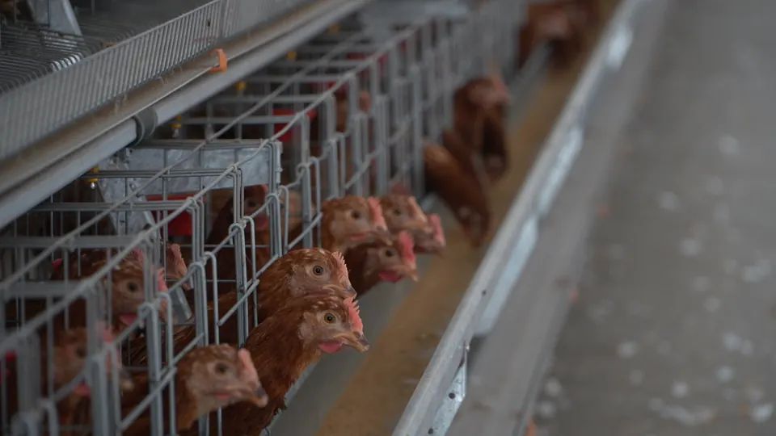
関連写真従来型のケージでは、鶏が卵を産むときに入れる巣箱も、足で握って休める止まり木もない。2024年度に農林水産省が採卵鶏の飼い方を尋ねたところ、408件の回答のうち304件はケージだけで飼っていた。巣箱や止まり木を備えたケージもあり、304件のうちどれだけが従来型かは、この設問では分からない。
関連写真 インドネシアの採卵鶏のケージ飼養設備。出典 Rickyandriandra, Kandang Baterai Ayam Layer（Wikimedia Commons、2022年） ／ CC BY-SA 4.0。表示用に縮小・形式変換。 出典
この記述を原資料で確かめる
「従来型のケージでは、鶏が卵を産むときに入れる巣箱も、足で握って休める止まり木もない。」
農林水産省「アニマルウェルフェアに関する新たな国の指針について ～採卵鶏～」p.17（PDF18枚目）「採卵鶏の飼養形態及び主要国における規制の状況」バタリーケージの欄。件数は令和6年度「採卵鶏の結果」p.1 設問3。 原資料を開く
設備についての根拠は下記の指針概要。408と304はいずれも回答数。
03羽が生え替わる時期をつくるため、餌を止める日本・2025年10月調査 ／ 飼養
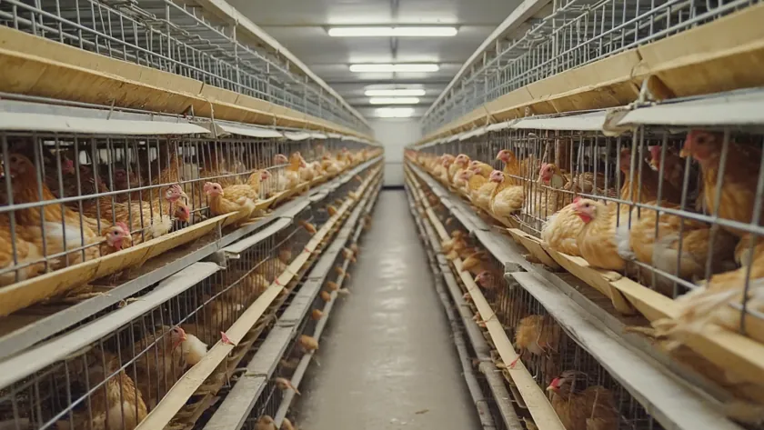
イメージ写真2025年10月の日本養鶏協会の調査では、餌を止めて鶏の羽の生え替わりを促す方法が、2,805万3千羽で使われていた。産卵をいったん休ませ、次の産卵期を迎えるために行う。この設問で集計した8,461万2千羽の33.2％にあたる。餌の栄養を調整し、食べさせながら羽の生え替わりを促す農場もある。
イメージ写真 羽を広げにくい過密なケージと羽毛が傷んだ採卵鶏。制作 Before We Eat。 出典
この記述を原資料で確かめる
「2025年10月の日本養鶏協会の調査では、餌を止めて鶏の羽の生え替わりを促す方法が、2,805万3千羽で使われていた。」
日鶏協ニュース2026年3月号 p.1「1．換羽について」の表。絶食方式28,053千羽、集計表の合計84,612千羽。 原資料を開く
協会の回答に含まれる鶏の羽数。何日間餌を止めたかは調査表にない。目的と給餌方式は農水省指針「4 誘導換羽（休産）」も参照。
04農場に来たとき、すでにくちばしの先が短いひな日本・平成26年度調査 ／ 身体への処置
 イメージ写真
イメージ写真2014年度の調査で、採卵鶏の農場206戸が、ひなを迎えたときにはすでにくちばしの一部が取り除かれていたと答えた。調査に答えたのは398戸。別の127戸は、ひなを迎える際に自分の農場で処置をしていた。鶏がほかの鶏の羽をつついて傷つけるのを防ぐために、くちばしの先を短くする。
イメージ写真 先端が短く処置されたひなのくちばし。制作 Before We Eat。 出典
この記述を原資料で確かめる
「2014年度の調査で、採卵鶏の農場206戸が、ひなを迎えたときにはすでにくちばしの一部が取り除かれていたと答えた。」
畜産技術協会「採卵鶏の飼養実態アンケート調査報告書」冊子p.23（PDF25枚目）問32、選択肢A・Bと表下の説明。 原資料を開く
調査全体398件。333は鶏の羽数ではなく、処置済みのひなを飼っていた農場数。処置の目的は農水省指針のビークトリミングの項を照合。
05肉用鶏8,985羽の足の裏を調べた日本・2012年の研究ほか ／ 健康被害写真は記事内で選べます足うらの傷が写っています
足の裏にある肉厚の部分を越え、その周りにまで皮膚炎が広がっていた肉用鶏が1,812羽いた。国内36農場から食鳥処理場に出荷された計8,985羽について、研究者が左足の裏を調べた結果だ。45の群れのどれにも皮膚炎の鶏がいて、調べた鳥すべてに見つかった群れもあった。
研究の記録写真を見る（足うらの傷が写っています）
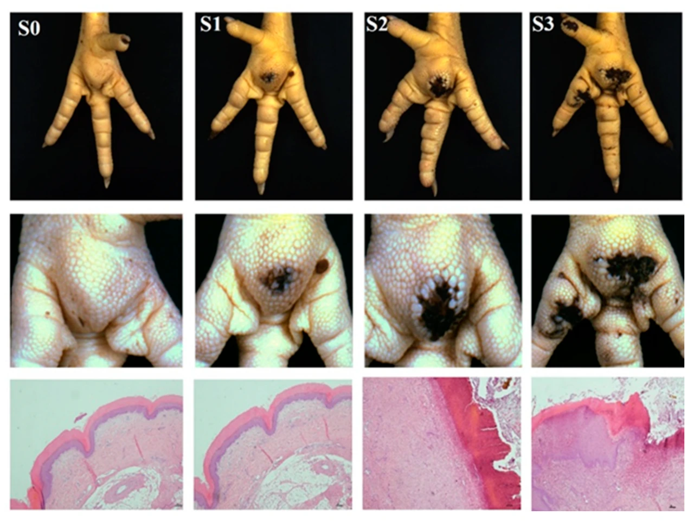
研究写真 ポーランドの研究で撮影された肉用鶏の足うらの傷を4段階で示す写真と顕微鏡写真。出典 Damaziak ほか（2024年）図2 ／ CC BY 4.0。表示用に形式・解像度を変更。 出典
この記述を原資料で確かめる
「足の裏にある肉厚の部分を越え、その周りにまで皮膚炎が広がっていた肉用鶏が1,812羽いた。」
橋本信一郎「わが国のブロイラー鶏における趾蹠皮膚炎の発生実態に関する研究」第1章、PDF10枚目「1-2」「1-3」、13枚目「1-5 小括」。スコア3の定義と1,812羽を照合。 原資料を開く
足裏の一部に限られる軽い病変も別に数えている。ここでいう1,812羽は最も広い範囲に病変が及んだ段階の羽数。
06母豚が中で向きを変えられない、一頭分の枠日本・令和6年度調査 ／ 飼養
 関連写真
関連写真妊娠中の母豚を一頭ずつ入れる細長い枠では、立ったり横になったりはできても、体ごと後ろを向く幅がない。この枠をストールという。2024年度の農林水産省調査で飼い方を答えた481件のうち、ストールだけを使うという回答が133件、何頭かを一緒に飼う場所と併用するという回答が301件あった。
関連写真 繁殖用の母ぶたを一頭ずつ飼う妊娠ストール。出典 Farm Sanctuary, Gestcrate01（Wikimedia Commons） ／ CC BY 1.0。表示用に縮小・形式変換。 出典
この記述を原資料で確かめる
「妊娠中の母豚を一頭ずつ入れる細長い枠では、立ったり横になったりはできても、体ごと後ろを向く幅がない。」
McGloneほか「The physical size of gestating sows」Introduction 第1段落、妊娠ストール内で可能な姿勢。国内の回答数は農水省令和6年度「豚の結果」p.1 設問4。 原資料を開く
論文は一般的な個別妊娠ストールを説明。国内の回答から、個々の母豚が枠にいた日数や設備の実測寸法は特定できない。
07子豚の尾を、生まれて二日以内に切る農場日本・平成26年度調査 ／ 身体への処置
 イメージ写真
イメージ写真子豚の尾を切るのはいつか。国内の農場107戸が「生後1日以内」、133戸が「生後1日〜2日以内」と答えた。2014年度に、子豚の尾を切っていると答えた349戸への質問だった。後で別の豚に尾をかじられて傷ができるのを防ぐため、まだ生まれて間もないうちに尾を短くしていた。
イメージ写真 短く切られた子ぶたの尾の処置跡。制作 Before We Eat。 出典
この記述を原資料で確かめる
「国内の農場107戸が「生後1日以内」、133戸が「生後1日〜2日以内」と答えた。」
畜産技術協会「豚の飼養実態アンケート調査報告書」冊子p.17（PDF19枚目）問22・23、時期別の表。 原資料を開く
349は実施農場数で、時期を問う設問の母数。目的は併載のEFSA科学的評価に基づく。
08生まれて間もない子豚の歯の先を切る日本・平成26年度調査 ／ 身体への処置
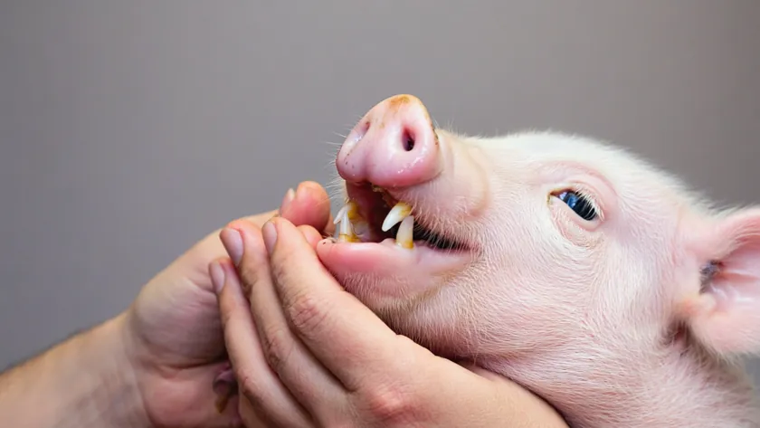
イメージ写真子豚の歯を切ると答えた272戸のうち、141戸は生後1日以内に切っていた。畜産技術協会が2014年度に国内の農場に尋ねた。歯の先を取り除くのに使う道具として、256戸がニッパーを挙げた。歯を切らないと答えた農場も138戸あった。
イメージ写真 口を保定された子ぶたと、短く処置された歯。制作 Before We Eat。 出典
この記述を原資料で確かめる
「子豚の歯を切ると答えた272戸のうち、141戸は生後1日以内に切っていた。」
畜産技術協会「豚の飼養実態アンケート調査報告書」冊子pp.18–19（PDF20–21枚目）問24〜26。「生後1日以内」は問25、141件。 原資料を開く
時期と道具は別々の質問。生後1日以内の141戸すべてがニッパーを使ったことにはならない。
09雄の子豚の精巣を、麻酔をかけずに取り除く日本・2016年度調査 ／ 身体への処置
 イメージ写真
イメージ写真雄の子豚の去勢で麻酔を使うか尋ねたところ、答えた734の経営体のうち714が、麻酔を使わないと答えた。日本養豚協会の2016年度の調査だ。肉に雄特有のにおいがつくのを防ぐために行う去勢では、外科的な方法で精巣を取り除く。
イメージ写真 身体への処置に備えて四肢を固定された子ぶた。制作 Before We Eat。 出典
この記述を原資料で確かめる
「雄の子豚の去勢で麻酔を使うか尋ねたところ、答えた734の経営体のうち714が、麻酔を使わないと答えた。」
日本養豚協会「養豚農業実態調査報告書」平成28年度、冊子p.40（PDF54枚目）「去勢を実施する際の麻酔処理」、PDF98枚目の全国欄に734件中714件。 原資料を開く
当時その設問に答えた経営体の数。後年の平成30年度版の去勢実施率は麻酔の有無を示さない。
10つなぎを外して、乳牛が歩ける時間はあるか日本・令和6年度調査 ／ 飼養
 イメージ写真
イメージ写真つなぎ飼いの乳牛は、つなぎを外して十分に体を動かす機会があるのか。農林水産省が2024年度、農場に尋ねた。236件の回答のうち65件が「あてはまらない」、61件が「あまりあてはまらない」を選んだ。飼い方を尋ねた別の設問では、373件のうち124件が、つなぎ飼いだけをしていると答えた。
イメージ写真 短い鎖につながれ、敷料のない床で動きが制限される乳牛。制作 Before We Eat。 出典
この記述を原資料で確かめる
「236件の回答のうち65件が「あてはまらない」、61件が「あまりあてはまらない」を選んだ。」
農林水産省、令和6年度「乳用牛の結果」p.4 設問26、全体236件、選択肢ごとの回答件数。 飼養形態は同p.1 設問3。 原資料を開く
当該設問は繋ぎ飼いの牛について聞いた自己評価。散歩の時間や年間を通じて一度も外さなかった農場数は測っていない。
11脚がむくみ、立てなくなった黒毛和牛日本・1991年の症例 ／ 健康被害
 イメージ写真
イメージ写真1991年の夏、ある肥育農家で黒毛和牛4頭の脚がむくみ、うち3頭は立てなくなった。体重600〜700キロに育った牛たちだった。獣医師が餌の内容を調べると、この農家はその年の春から、肥育の仕上げの時期にビタミンやミネラルを加えた配合飼料を与えなくなっていた。獣医師はビタミンAの欠乏を疑った。
イメージ写真 やせた牛が横たわる、寝床の乏しい囲い。制作 Before We Eat。 出典
この記述を原資料で確かめる
「1991年の夏、ある肥育農家で黒毛和牛4頭の脚がむくみ、うち3頭は立てなくなった。」
加藤大介ほか「黒毛和種肥育農家に発生したビタミンA欠乏症」日本獣医師会雑誌46巻 p.658（PDF6枚目）、演題22「発生状況」「飼料形態の調査」。 原資料を開く
この農場の症例4頭についての報告。「VA欠乏症と思われる」とする著者の判断に沿い、4頭それぞれに確定診断があったとはしていない。
12島根の農場で、従業員が乳牛2頭の鼻や首を蹴った日本・島根県、2023年発生 ／ 個別の暴力事件
 イメージ写真
イメージ写真島根県大田市の農場で、従業員が乳牛2頭の鼻や首のあたりを足で蹴った。2023年6月3日のことだった。本人がその様子を撮影してSNSに投稿し、動画を知った人から県に連絡が入った。県は農場に立ち入り、対象の牛を特定した。9月22日、松江地方裁判所は元従業員に罰金20万円を言い渡した。
イメージ写真 人の足元で横たわる牛。制作 Before We Eat。 出典
この記述を原資料で確かめる
「島根県大田市の農場で、従業員が乳牛2頭の鼻や首のあたりを足で蹴った。」
山陰放送2023年9月22日付、本文1ページ目「起訴状などによりますと」の段落。乳牛であることと情報提供・立入りの経緯は島根県資料p.20（PDF25枚目）「1 端緒」「2 県の対応状況」。 原資料を開く
行為の詳細は起訴状などを伝えた報道による。県は立入り時に対象の乳牛に外傷などの異常は認められなかったと記録している。これは当時痛みがなかったという意味ではない。


海外の選別・飼養・身体への処置
13乳用牛の雄に生まれ、育つ前に殺される子牛英国・NZ等／NZは2020年調査 ／ 生産上の選別
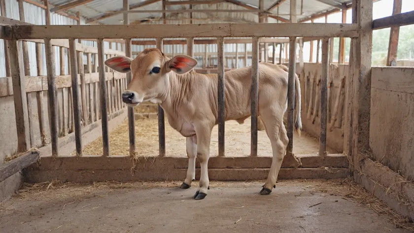
イメージ写真乳用牛の雄は乳を出さない。肉用に育てても費用に見合わないとされ、生まれて間もなく殺される子牛がいる。英国獣医師会が取り上げた問題だ。ニュージーランドでは2020年、酪農家262戸に子牛の行き先を尋ねた。雌雄を合わせると、若いうちにと畜するため売られた子牛は、農場ごとの割合を平均して35％だった。
イメージ写真 向きを変えにくい狭い囲いに一頭で隔離された子牛。制作 Before We Eat。 出典
この記述を原資料で確かめる
「肉用に育てても費用に見合わないとされ、生まれて間もなく殺される子牛がいる。」
英国獣医師会「Surplus male production animals」節「What’s the issue?」冒頭2段落。ニュージーランドの数値はEdwardsほか（2021）p.179要旨・p.181「Fate of calves」第1段落。 原資料を開く
英国獣医師会の説明とNZの農場調査を区別。35％の分母は雄だけではなく、調査先で生まれた子牛全体。5％の農場内安楽死とも別区分。
14乳用ヤギに生まれた雄の子は、どこへ行くのか英国の農場訪問報告等 ／ 生産上の選別
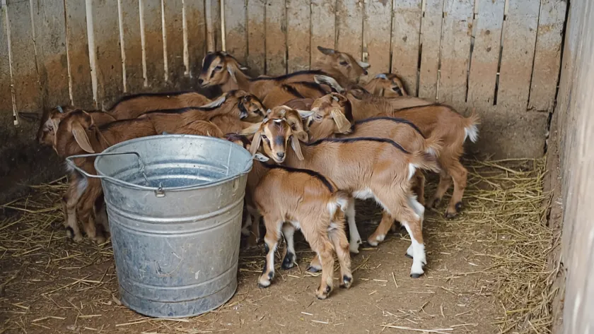
イメージ写真英国の乳用ヤギ農家を訪ねたケイト・リトルは、大きな農場では雄の子が生まれたときに殺されていると記した。ドーセットで出会った酪農家は、自分のところで雄も育てたいが、場所がないと話した。この農場では毎年、雄の子のおよそ3分の1を生後2週間で別の農場に引き渡し、そこで育ててもらっていた。
イメージ写真 育成先の限られた雄の子ヤギが置かれた、餌の乏しい囲い。制作 Before We Eat。 出典
この記述を原資料で確かめる
「英国の乳用ヤギ農家を訪ねたケイト・リトルは、大きな農場では雄の子が生まれたときに殺されていると記した。」
Kate Little（2010）「Meat goats: sustainable livestock farming」冊子p.37（PDF39枚目）「Partnerships formed」第1段落、続く「Tim and Will Frost team up with Longdown Activity Farm」冒頭3段落。 原資料を開く
出生時に殺すとする訪問調査全般の記述と、引受先があったドーセットの個別農場は区別した。そこで引き渡さなかった子の行き先は推定していない。
15雌だと分かると、生まれて数日のアヒルが殺されたフランス・上院報告等 ／ 生産上の選別
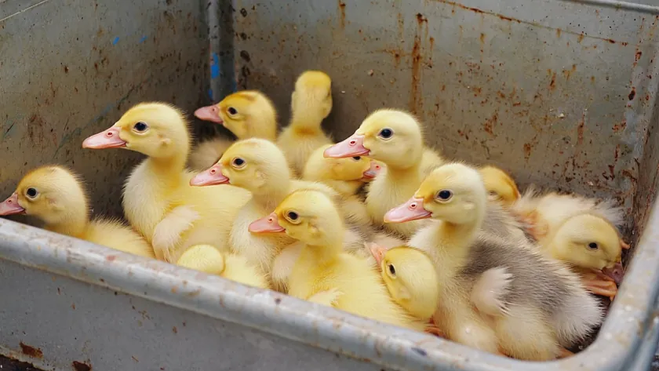
イメージ写真フォアグラ用に育てるアヒルは、雄のほうが肝臓が大きくなる。フランスでは、繁殖用や食肉用に引き取られる雌のひなもいたが、雌だと分かった時点で殺されるひなもいた。生まれて数日のことだった。
2021年のフランス上院報告に載った当時の農業省の推計では、殺された雌のひなは年3,000万羽。2024年には、ふ化する前に雄雌を見分ける取り組みを広げる費用を業界で負担することが決まった。
イメージ写真 選別用の容器に密集したアヒルのひな。制作 Before We Eat。 出典
この記述を原資料で確かめる
「フランスでは、繁殖用や食肉用に引き取られる雌のひなもいたが、雌だと分かった時点で殺されるひなもいた。」
フランス上院報告第581号（2021年）第3条の解説、23ページの農業省推計と24ページ第1〜3段落。 原資料を開く
3,000万羽は上院報告が引用した当時のフランス国内の年間推計。現在の羽数は示していない。2024年の合意はフランス家きん業界活動報告77〜78ページ。
16フォアグラをつくる最後の12〜15日間に、アヒルに起きたことフランスの生産を扱った2017年の研究レビュー ／ 強制給餌と健康
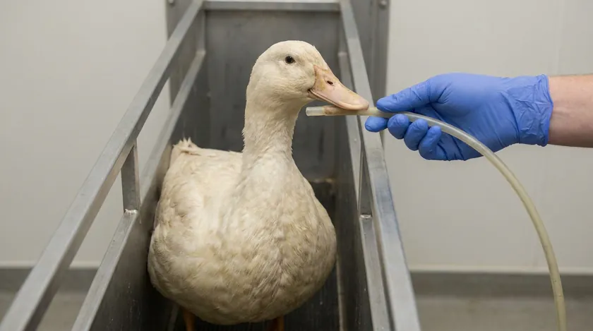
イメージ写真フォアグラ用のアヒルは、出荷前の12〜15日間、肝臓を大きくするために餌を強制的に与えられる。フランスの生産を扱った研究レビューには、餌が通る食道に炎症が起きた例や、歩き方が変わった例が記録されている。研究者がまとめた資料では、この給餌期間に死んだアヒルは全体の2〜6％だった。
イメージ写真 アヒルの身体を拘束する囲いと強制給餌の場面。制作 Before We Eat。 出典
この記述を原資料で確かめる
「研究者がまとめた資料では、この給餌期間に死んだアヒルは全体の2〜6％だった。」
Rochlitz・Broom（2017）135ページ、要旨の冒頭から食道炎を挙げる箇所まで。 原資料を開く
フランスの生産を中心に既存研究をまとめたレビュー。死亡率は強制給餌期間中の数字で、個々の死因を示していない。
17水を飲めても、頭を水に浸せない欧州等・2023年評価等 ／ 飼養
 イメージ写真
イメージ写真アヒルは水に頭を沈め、目のまわりや鼻の穴を洗う。水を羽に振りかけ、くちばしで羽を整える。給水器の先から水を飲めても、それだけでは頭ごと水につけられない。欧州食品安全機関は、飲み水とは別に、少なくとも頭を沈められる深さの水を用意するよう勧めている。
イメージ写真 給水器の前に立つアヒル。頭を浸せる水場がない。制作 Before We Eat。 出典
この記述を原資料で確かめる
「給水器の先から水を飲めても、それだけでは頭ごと水につけられない。」
EFSA（2023）3.4.1.2.1節の給水設備、3.6.5.1節「Open water provision」、3.8.5.1節の結論。 原資料を開く
給水器以外にも水場がある飼育舎はある。ここでは頭を水に浸す場所がないという条件を記した。
18金網の床では、ウズラが探す餌は網の下に落ちる欧州・2023年評価 ／ 飼養
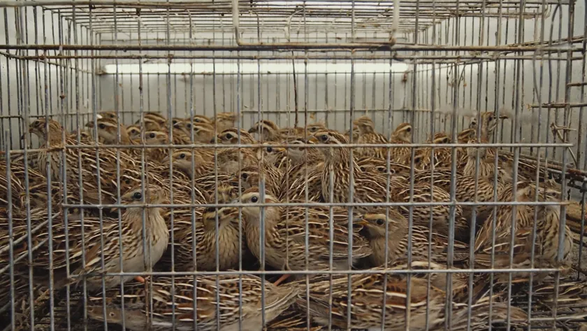
イメージ写真ウズラは歩き、地面を足でかき、見つけたものをついばむ。欧州で食用の卵を生産するウズラ農場の多くは、何羽も一緒に金網のケージで飼っている。敷き材のない網の床では、こぼれた餌の粒もすぐに網目から落ちる。足元をかいて餌を探し続けることも、砂を羽にかけて体を手入れすることも難しい。
イメージ写真 立つ・羽を広げる行動が制限される低いケージのウズラ。制作 Before We Eat。 出典
この記述を原資料で確かめる
「敷き材のない網の床では、こぼれた餌の粒もすぐに網目から落ちる。」
EFSA（2023）3.5.8.4節、Laying quail and breeders で始まる段落。採卵農場の飼育方式は3.4.4節、砂浴びは3.5.4節。 原資料を開く
餌箱から食べることと、地面で自分から餌を探す行動を区別した。
19七面鳥のひなは、生後1日で足の指先に処置を受けた欧州・加盟国調査 ／ 身体への処置
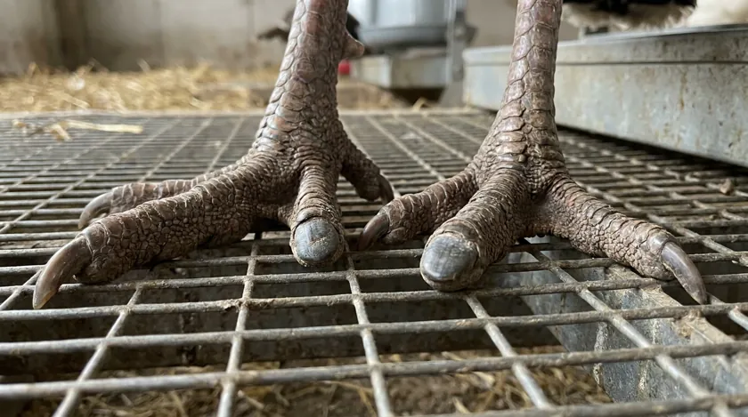
イメージ写真生後1日の七面鳥のひなに、前を向いた3本の指先で爪が伸びる部分を焼く処置が行われていた。仲間にひっかき傷をつけるのを防ぐという理由だった。欧州食品安全機関の2024年の聞き取りで、実施を報告したのは2か国。どちらの回答にも麻酔や痛み止めの使用はなく、処置の後、数時間は歩いたり止まり木にとまったりしにくくなることがあると報告された。
イメージ写真 先端への処置が行われた七面鳥の足指。制作 Before We Eat。 出典
この記述を原資料で確かめる
「生後1日の七面鳥のひなに、前を向いた3本の指先で爪が伸びる部分を焼く処置が行われていた。」
EFSA技術報告 EN-9138（2024）11ページ、3.2節の第1・第2段落。 原資料を開く
指そのものの切断と、爪が育つ部位への処置を区別した。2は実施を報告した国の数。
20ほかの鳥につつかれる前に、ひなの肉垂を取り除く欧州・加盟国調査 ／ 身体への処置
 イメージ写真
イメージ写真雄の七面鳥には、くちばしの上から垂れ下がる肉の突起がある。そこをほかの鳥につつかれて傷つくのを防ごうと、突起そのものを取り除く飼い方が、欧州食品安全機関の調査で2か国から報告された。うち1か国では、生後1日のひなにこの処置をしていた。
イメージ写真 くちばしの付け根を横から見た七面鳥。制作 Before We Eat。 出典
この記述を原資料で確かめる
「うち1か国では、生後1日のひなにこの処置をしていた。」
EFSA技術報告 EN-9138（2024）11〜12ページ、3.3節「De-snooding」。 原資料を開く
もう1か国は局所麻酔の使用を回答。異なる国の報告を同じひなに行った処置としていない。
21生後およそ40日、ほとんど歩けない肉用鶏がいた英国・2008年調査報告等 ／ 育種・健康被害
 イメージ写真
イメージ写真英国の調査チームは、食肉用に育てられた鶏176群で、約5万1,000羽の歩き方を調べた。調査時の平均は生後40日。群れの大きさを考慮して集計すると、ほとんど歩けないほど脚に問題のある鶏は3.3％にのぼった。歩きにくさには、速く大きくなる系統かどうかに加え、鶏舎の混み具合や日齢も関わっていた。
イメージ写真 湿った敷料の上で脚を開き、立ち上がりにくい肉用鶏。制作 Before We Eat。 出典
この記述を原資料で確かめる
「群れの大きさを考慮して集計すると、ほとんど歩けないほど脚に問題のある鶏は3.3％にのぼった。」
Knowlesほか（2008）要旨と表1。歩行の評価4は3.1％、評価5は0.2％。表1脚注に重みづけの説明。 原資料を開く
3.3％は群れの規模で重みづけした推計。のべ調査回数206と、対象の176群を区別した。
22餌を食べ終えた親鶏が、空の餌箱をつつく欧州・2023年評価 ／ 給餌
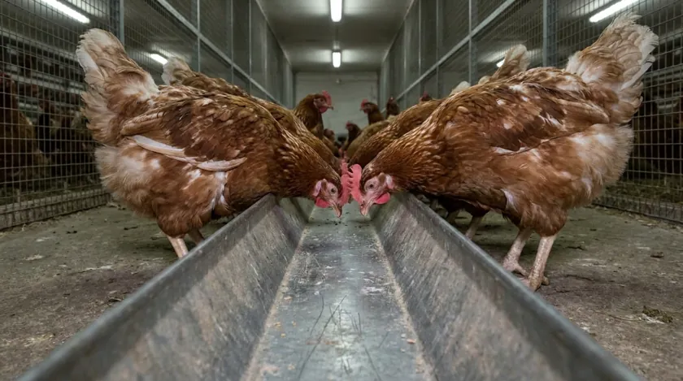
イメージ写真成長の速い肉用鶏の親は、繁殖に適した体重に抑えるため、餌の量を制限される。週のうち4日だけ餌を与え、残りの3日は間を空けて餌を抜く方式もある。給餌制限を受けた親鶏には、餌のなくなった容器を繰り返しつつく行動が報告されている。欧州食品安全機関は、こうした行動を、空腹が長く続いているかを知る手がかりにしている。
イメージ写真 餌のない給餌器をつつく親鶏。制作 Before We Eat。 出典
この記述を原資料で確かめる
「給餌制限を受けた親鶏には、餌のなくなった容器を繰り返しつつく行動が報告されている。」
EFSA（2023）3.7.2.3節の冒頭。週4日の例は3.7.2.1節「Description of feed restriction in broiler breeders」。 原資料を開く
給餌日程は複数ある。空の餌箱をつつく行動が週4日の方式だけで観察されたとはしていない。
23調べた雌鶏4,756羽のうち、4,098羽は胸の骨が折れていたデンマーク・2021年報告 ／ 健康被害
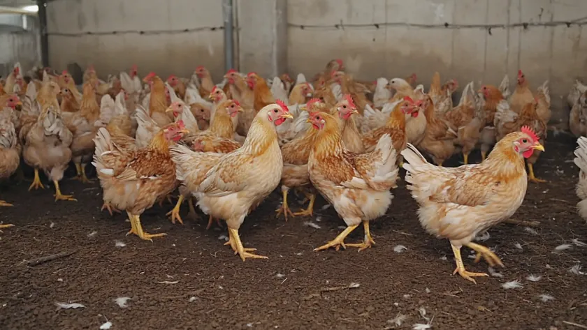
イメージ写真デンマークで、研究者が産卵期を終えた鶏を解剖した。雌4,756羽のうち、胸の中央を走る「竜骨」が折れていたのは4,098羽だった。同じ骨に4か所以上の骨折があった鶏もいた。調べた40の群れには、ケージで育った鶏も、床を歩き回れる鶏もいた。どちらの飼い方でも骨折は見つかった。
イメージ写真 羽毛の脱落した鶏と、汚れた敷料のある過密な鶏舎。制作 Before We Eat。 出典
この記述を原資料で確かめる
「雌4,756羽のうち、胸の中央を走る「竜骨」が折れていたのは4,098羽だった。」
Thøfnerほか（2021）表7「Total」行・脚注1。1羽に複数の骨折があったことは要旨の複数骨折を述べた段落。 原資料を開く
調べた総数は雌雄4,794羽。骨折割合を示した表7では雄38羽を除いている。骨折が生じた場面を目撃した研究ではない。
24出産用の柵に入った母豚は、向きを変えられない欧州・2022年評価 ／ 飼養
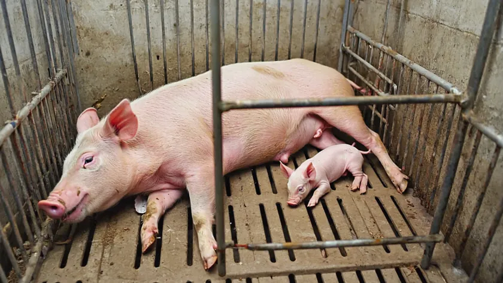
イメージ写真出産を控えた母豚は、巣を作る場所を探し、材料を集める。子豚が生まれる前から母豚を細い柵に入れ、産んだ後もそこで授乳させる飼い方がある。子豚が下敷きになるのを防ぐためだ。従来型の柵では、母豚は立って前後に少し足を動かせても、くるりと向きを変えられない。巣を作る場所も自分では選べない。
イメージ写真 細い柵に拘束された母ぶたと乳頭から離れて倒れた子ぶた。制作 Before We Eat。 出典
この記述を原資料で確かめる
「従来型の柵では、母豚は立って前後に少し足を動かせても、くるりと向きを変えられない。」
EFSA（2022）5.1.1節「Restriction of movement」冒頭2段落と、出産前の巣づくりに関する直後の説明。 原資料を開く
従来の固定式分娩柵に限った説明。途中で側面を開放する方式もある。
25母牛と離れたあと、子牛は囲いから頭を出したカナダ・2000年発表／欧州・2023年評価 ／ 母子の飼養
 イメージ写真
イメージ写真乳牛の親子27組を、生後6時間、1日、4日のいずれかで引き離した研究がある。それぞれ9組ずつ、別れる前後の様子を録画した。母牛と長く過ごしてから離された子牛ほど、別れたあとは囲いの中をよく動き、囲いの外に頭を出している時間が長かった。
イメージ写真 母牛から柵で離され、汚れた敷料で休む子牛。制作 Before We Eat。 出典
この記述を原資料で確かめる
「母牛と長く過ごしてから離された子牛ほど、別れたあとは囲いの中をよく動き、囲いの外に頭を出している時間が長かった。」
Weary・Chua（2000）要旨、親子の組数と撮影時間を示す段落、続く分離後の子牛の行動比較。 原資料を開く
2000年のカナダでの個別研究を、欧州食品安全機関の2023年評価3.18.4節が引用。母牛を捜していたという動機の断定や、早く離す方が望ましいとの判断はしていない。
26同じ囲いで育つ子牛と、柵越しにしか触れられない子牛デンマーク・2012年発表／欧州・2023年評価 ／ 飼養
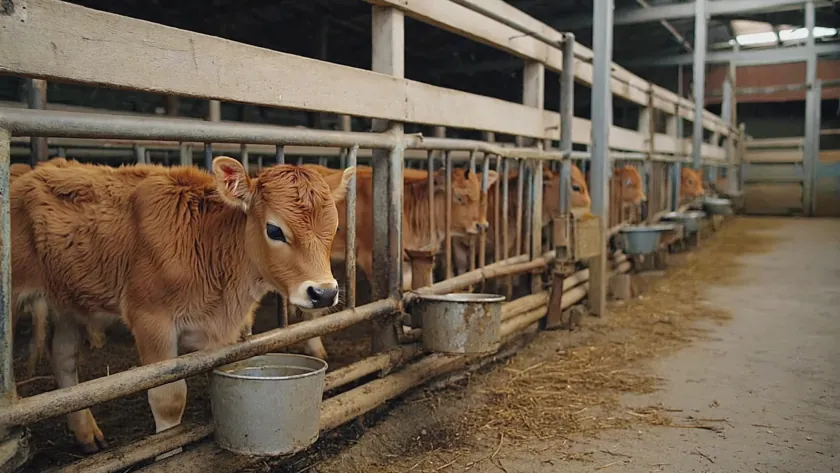
イメージ写真デンマークで、子牛を2頭一緒に育てたときと、1頭ずつ隣り合う囲いで育てたときの違いを調べた。1頭用の囲いでも、柵越しに隣の子牛には触れられた。生後2日の観察で、相手のにおいをかいだり、なめたりしたのは、一緒の囲いでは観察対象の6頭すべて、別々の囲いでは6頭のうち2頭だった。
イメージ写真 一頭ずつ仕切られた囲いにいる子牛。制作 Before We Eat。 出典
この記述を原資料で確かめる
「生後2日の観察で、相手のにおいをかいだり、なめたりしたのは、一緒の囲いでは観察対象の6頭すべて、別々の囲いでは6頭のうち2頭だった。」
Duve・Jensen（2012）要旨の生後2日目の結果、および「Materials and Methods」の飼育条件。 原資料を開く
研究に参加したのは計27組54頭。本文の各6頭は、生後2日のこの行動比較の対象である。日齢は各組の若い子牛を基準とする。
27色の白い肉を得るために、子牛の餌から鉄分を減らす欧州・2023年評価 ／ 給餌
 イメージ写真
イメージ写真色の淡い子牛肉には、1キロ当たりでより高い値段がつく。欧州の白い子牛肉の生産では、その色を出すために、育ち盛りの子牛に与える鉄分を意図して少なくする。血液中で酸素を運ぶヘモグロビンを作るにも鉄がいる。餌の鉄分が足りなければ、子牛は貧血になるおそれがある。
イメージ写真 乳を飲んで育つ子牛。制作 Before We Eat。 出典
この記述を原資料で確かめる
「欧州の白い子牛肉の生産では、その色を出すために、育ち盛りの子牛に与える鉄分を意図して少なくする。」
EFSA（2023）要約「Iron」第1段落、3.1.2節「Introduction to veal systems」、3.16.3節。 原資料を開く
白い子牛肉の生産方式に関する評価。肉の色だけでは生前の貧血を診断できない。
28子牛の餌の繊維を減らすと、かみ直す時間も短くなる欧州・2023年評価 ／ 給餌
 イメージ写真
イメージ写真牛は、いったんのみ込んだ餌を口に戻し、もう一度かむ。これが反すうだ。白い子牛肉の生産で見られる、繊維の少ない餌を与えた場合の反すう時間を、欧州食品安全機関が見積もった。同じ月齢で、繊維の量を制限せずに育てたときの約3分の1だった。干し草のように長さのある餌は、粉にした餌よりも長くかめる。
イメージ写真 干し草の見当たらない囲いの子牛。制作 Before We Eat。 出典
この記述を原資料で確かめる
「同じ月齢で、繊維の量を制限せずに育てたときの約3分の1だった。」
EFSA（2023）3.16.4.4節「Conclusions on fibre amounts」冒頭の二つの結論と、飼料の形についての結論。 原資料を開く
生後2週〜6か月で1日平均0.19キロの中性デタージェント繊維をとる条件の専門家推定。特定の子牛を一日観察して得た実測値ではない。
29ウサギが三回続けて跳べる広さはあるか欧州・2020年評価 ／ 飼養
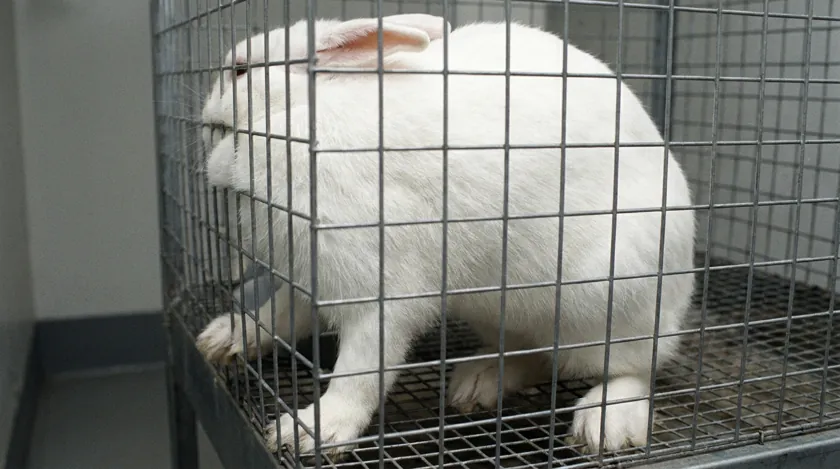
イメージ写真幅25.4センチ、奥行き44センチ、高さ28センチ。欧州食品安全機関が紹介したのは、離乳した食肉用のウサギが、出荷前まで1、2羽で過ごす金網ケージの一例だ。専門家は、ウサギが三回続けて跳べるかを、動きの自由を評価する目安にした。六つの飼い方を比べたところ、従来型のケージで育つウサギのいちばん大きな問題は、動ける範囲の狭さだった。
イメージ写真 足を休める場所のない金網床に閉じ込められたウサギ。制作 Before We Eat。 出典
この記述を原資料で確かめる
「幅25.4センチ、奥行き44センチ、高さ28センチ。」
EFSA（2020）、表7の「Bicellular cages for growing rabbits」行（幅・奥行き・高さ）と図5の説明（離乳後1～2羽）。評価は「Restriction of movement」の定義、表22のConventional列1位。 原資料を開く
飼育方式ごとの専門家評価。すべての個体の跳んだ回数を実測した調査ではない。
30ハエの幼虫を防ぐため、子羊の尻の皮膚を切り取る豪州・2024年の業界資料 ／ 羊毛生産
 イメージ写真
イメージ写真羊の尻の毛にはふんや尿が残りやすく、そこにハエが寄ってくる。幼虫が羊の体に寄生するのを防ぐため、オーストラリアには、専用のはさみで尻や尾の皮膚を一部切り取る飼育法がある。ミュールジングと呼ばれる、痛みを伴う処置だ。
2024年の調査では、メリノ種の雌の子羊にこの処置を行うと答えた生産者は57.7％だった。
イメージ写真 羊の尻周辺に残るミュールジング後の瘢痕。制作 Before We Eat。 出典
この記述を原資料で確かめる
「幼虫が羊の体に寄生するのを防ぐため、オーストラリアには、専用のはさみで尻や尾の皮膚を一部切り取る飼育法がある。」
豪州羊産業の2024年年報、66ページの用語集「Mulesing」。割合は30ページ、指標1.1.1a。痛みへの対応は指標1.1.2。 原資料を開く
調査全体は生産者1,268人。割合の対象は雌の子羊についての生産者回答。メリノ種全頭への施術率ではない。
輸送・処理・ケアをめぐる記録
31一隻の船で、暑さのために2,400頭を超す羊が死んだ豪州発・2017年 ／ 輸送中の死亡
 イメージ写真
イメージ写真2017年8月1日、羊63,804頭を載せたアワシ・エクスプレス号が、西オーストラリアのフリーマントル港を出た。クウェート、カタール、アラブ首長国連邦へ向かう23日間に、船の上で2,400頭を超える羊が暑さのために死んだ。乗組員が撮った映像は、翌年4月、オーストラリアのテレビで放送された。
イメージ写真 蒸し暑い船内に密集し、口を開いて呼吸する羊。制作 Before We Eat。 出典
この記述を原資料で確かめる
「クウェート、カタール、アラブ首長国連邦へ向かう23日間に、船の上で2,400頭を超える羊が暑さのために死んだ。」
豪州の生きた家畜の輸出に関する監察報告（2020）、本文40ページ「Case study 1」、第1・第2段落。 原資料を開く
頭数、航海日数、死因は独立監察報告の表記に従った。放映には同船の別航海の映像も含まれる。
32まだ乳を飲む子牛を、18時間トラックで運ぶドイツからオランダへ・2020年発表 ／ 輸送
 イメージ写真
イメージ写真生後平均18日、まだ乳を飲む雄の子牛368頭を対象に、6時間運ぶ場合と18時間運ぶ場合を比べた研究がある。車内のカメラで見ると、子牛は立っている時間より、横になっている時間のほうが長かった。農場に着いてからの24時間も、横になって過ごす時間のほうが長かった。
子牛は移動中も乳を必要とする。欧州食品安全機関によると、乳を飲んだあと、消化のためには少なくとも3時間の休息が要る。途中で1時間休むだけでは、飲んで体を休める時間をまかなえない。
イメージ写真 汚れた輸送車内で密集し、一部が横たわる子牛。制作 Before We Eat。 出典
この記述を原資料で確かめる
「車内のカメラで見ると、子牛は立っている時間より、横になっている時間のほうが長かった。」
Marcatoほか（2020）「Discussion」の「Behavior of calves is influenced by transport」で始まる段落と次の段落。日齢・頭数・輸送条件は「Experimental Design」。 原資料を開く
横臥は姿勢の観察結果。原因を疲労に断定していない。乳と休息は別資料、EFSA（2022）の結論「Transport of unweaned calves」。
33豚が後ずさりしたとき、まだ意識があった2016年の研究／イングランド・ウェールズの2024年調査 ／ と畜
 イメージ写真
イメージ写真高い濃度の二酸化炭素で豚を気絶させるとき、豚はいつ意識を失うのか。研究者は豚48頭を二つの濃度の群に分け、動きと脳波を照らし合わせた。どちらの群でも、後ずさりしようとしたり、口を開けてあえいだりする動きは、脳波から意識を失ったと判断される前に見られた。
英国食品基準庁の調査によると、2024年2月の一週間にイングランドとウェールズで処理された豚161,748頭のうち、90％に高濃度の二酸化炭素が使われた。
イメージ写真 高濃度二酸化炭素の設備内で口を開けるぶた。制作 Before We Eat。 出典
- 英国食品基準庁ほか・2024年の処理場調査
- Humane Slaughter Association・食肉処理時の動物福祉
- Verhoevenほか・豚の行動と脳波の実験
- 英国食品基準庁・2024年処理場調査（改訂版）
この記述を原資料で確かめる
「どちらの群でも、後ずさりしようとしたり、口を開けてあえいだりする動きは、脳波から意識を失ったと判断される前に見られた。」
Verhoevenほか（2016）、要旨の「During exposure to the gas」で始まる文。各群24頭。英国調査の利用率は改訂版10ページ、総頭数は12ページの図3.1b。 原資料を開く
行動を記録した実験と、2024年2月12～18日の英国の調査は別。英国の豚すべての反応を観察したものではない。
34鶏の両脚を金具に掛けるのは、意識があるうちだったイングランド・ウェールズ、2024年調査週 ／ 食鳥処理
 イメージ写真
イメージ写真鶏の頭を電気の流れる水槽に入れて気絶させる方法がある。その手前で、作業員は鶏の両脚を金具に掛ける。鶏は意識を保ったまま、脚を挟まれ、頭を下にして運ばれる。欧州食品安全機関は、こうして逆さにつるすことが痛みや恐怖をもたらすと指摘している。
2024年2月の一週間にイングランドとウェールズで処理された肉用鶏は約1,840万羽。調査では、そのおよそ5羽に1羽に、ハラールの食肉を作るための電気水浴法が使われた。
イメージ写真 処理工程で脚を固定され、逆さにつられた鶏。制作 Before We Eat。 出典
この記述を原資料で確かめる
「鶏は意識を保ったまま、脚を挟まれ、頭を下にして運ばれる。」
EFSA（2019）の図7直前の段落、および3.6.2.3「Shackling」の定義。調査の数値は英国食品基準庁・改訂版11ページ「Meat chickens」で始まる箇条書き。 原資料を開く
18％と1％は肉用鶏全体に対し調査が区別した二つの区分。割合は同報告で丸められている。
35気絶させる前に、羊の首を切るイングランド・ウェールズ、2024年調査週 ／ と畜
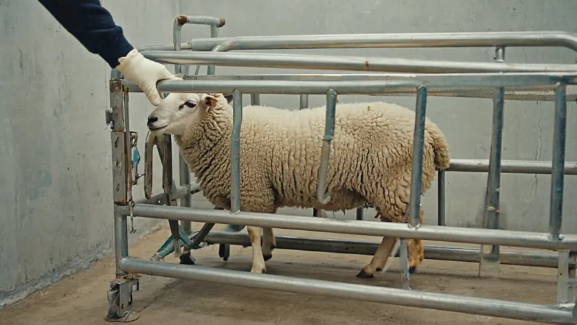
イメージ写真2024年2月の一週間、イングランドとウェールズの処理場では205,994頭の羊がと畜された。そのうち28.8％は、気絶させずに首を切る方法で処理された。欧州食品安全機関によると、意識のある羊の首の組織を切ると、出血によって意識を失うまで痛みが続く。
同じ調査で、ハラールの方法で処理された羊にも、先に気絶させた羊と、そうしなかった羊の両方がいた。
イメージ写真 と畜に向けて頭と身体を保定された羊。制作 Before We Eat。 出典
この記述を原資料で確かめる
「そのうち28.8％は、気絶させずに首を切る方法で処理された。」
英国食品基準庁・改訂版12ページ、図3.1bのSheep行、Total slaughtered／Total non-stun列。首を切る際の痛みはEFSA（2021）3.3.2「Bleeding during slaughter without stunning」。 原資料を開く
期間は2024年2月12～18日。ハラールで事前に気絶させたものは全対象羊の53.6％、させなかったものは28.3％。
36作業員が尾から手を離すと、牛は崩れ落ちた米国カリフォルニア州・2007年撮影 ／ 個別事件
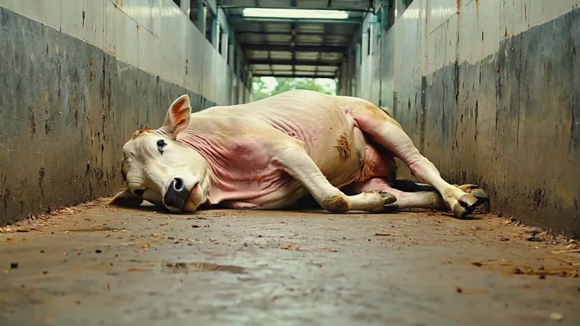
イメージ写真自分で歩けない牛を、二人の作業員が支えていた。電気棒で立たせ、尾をつかんで通路を進ませる。牛が処理用の囲いに入って作業員が手を離すと、牛はその場で崩れ落ちた。2007年、米国カリフォルニア州チノの食肉処理場で撮影した調査員が、連邦議会に提出した記録だ。
2008年、この処理場の従業員の一人に拘禁6か月の刑が言い渡された。学校給食に牛肉を納めていた企業などを相手取った別の民事訴訟は、2013年に和解した。
イメージ写真 汚れた搬入通路で倒れ、自力で立てない牛。制作 Before We Eat。 出典
この記述を原資料で確かめる
「牛が処理用の囲いに入って作業員が手を離すと、牛はその場で崩れ落ちた。」
米連邦下院公聴会の資料、印刷版148ページ「Accounts from HSUS Investigator …」第7項前半。撮影時期・施設は同第2項。 原資料を開く
行為は現場で撮影した調査員の記録として帰属。拘禁刑はAPの判決報道、和解は米司法省2013年11月27日発表。第7項の特定の作業員と被告を同一視していない。
37作業員は子牛を地面に投げ、門の下を引きずったニュージーランド・2015年発生 ／ 個別事件・ペットフード
 イメージ写真
イメージ写真作業員は子牛を地面に投げ落とし、蹴ったり、たたいたりした。門の下を引きずられた子牛もいた。2015年8月、ニュージーランドのテ・カウファタにあるペットフード用の処理施設でのことだ。
作業員は酪農からこの施設に送られた子牛111頭の扱いをめぐり、10件の罪を認めた。控訴審で自宅拘禁などの刑は取り消され、懲役2年が言い渡された。
イメージ写真 処理施設で人に扱われる子牛。制作 Before We Eat。 出典
この記述を原資料で確かめる
「門の下を引きずられた子牛もいた。」
ニュージーランド第一次産業省の控訴審発表、担当者Gary Orrの発言「There was clear evidence of abuse」で始まる段落。頭数と訴因は「He had earlier pleaded guilty」で始まる段落。 原資料を開く
111頭は訴因の対象になった子牛の総数。それぞれの暴行を受けた頭数は公表文では分からない。
38死んだように見えた子牛は、生きていたニュージーランド・2020年の農場訪問 ／ 個別事件・ケアの不履行
 イメージ写真
イメージ写真2020年4月3日、ニュージーランド南島の農場を訪れた検査員は、目の前の子牛が死んでいると思った。子牛は生きていた。体はひどくやせ、あちこちに傷があり、口の中には数百匹のウジがいた。
獣医師は、子牛が少なくとも丸一日は動けずにいたと判断した。やせた原因は体内の寄生虫だった。衰弱した子牛を安楽死させず、苦しむままにした件で、農場主は罪を認め、3,500ニュージーランドドルの罰金を科された。
イメージ写真 地面に横たわる、やせた子牛。制作 Before We Eat。 出典
この記述を原資料で確かめる
「体はひどくやせ、あちこちに傷があり、口の中には数百匹のウジがいた。」
ニュージーランド第一次産業省、2021年2月11日発表。担当者Gray Harrisonの発言「Initially the officers thought the calf was dead」と続く獣医所見の段落。 原資料を開く
初見の判断は検査員、動けなかった期間は獣医師の所見。発表本文は検索インデックスに収録された省の全文を同時期の掲載内容とも照合した。
牛の処置・飼養と国内の現場記録
39牛の角を取るとき、麻酔を使っていたか日本・平成26年度 ／ 業界調査
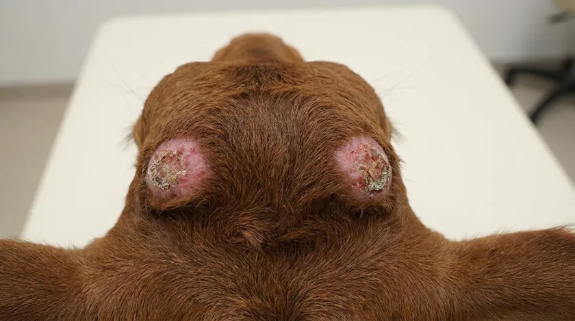
イメージ写真牛の角を取ったり、これから角になる部分を焼いたりする処置を「除角」と呼ぶ。2014年度の国内調査で、この処置をしている酪農家437戸のうち、372戸が麻酔を使っていないと答えた。肉用牛の農家でも、除角をしている451戸のうち358戸が、麻酔を使っていないと答えている。
酪農家にどんな道具を使うかを尋ねると、最も多く挙がったのは焼きごてだった。
イメージ写真 子牛の頭に残る除角処置の跡。制作 Before We Eat。 出典
この記述を原資料で確かめる
「2014年度の国内調査で、この処置をしている酪農家437戸のうち、372戸が麻酔を使っていないと答えた。」
畜産技術協会『乳用牛の飼養実態アンケート調査報告書』17ページ問26、方法は16ページ問25。肉用牛の報告書は20ページ問25。 原資料を開く
調査単位は農家。処置法と麻酔の有無のクロス集計はなく、焼きごてを使った農家の無麻酔率は算出できない。
40尾を短くした乳牛の後ろ脚には、ハエが多かった米国・2001年研究／日本・2014年度調査 ／ 研究・飼養実態調査
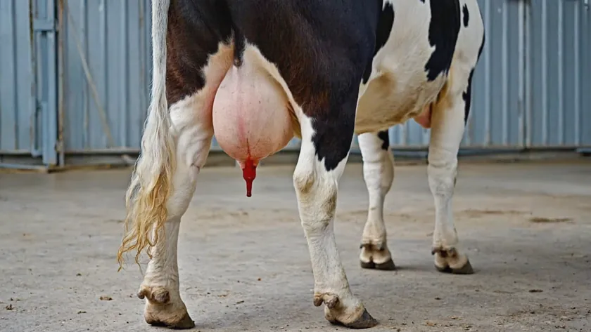
イメージ写真牛は尾を振ってハエを払う。米国の研究者が、尾を短く切った乳牛8頭と、尾を切っていない乳牛8頭を、ハエが出る季節に5日続けて観察した。尾を切った牛のほうが、後ろ脚に止まっていたハエの数は多かった。前脚では差がなかった。
日本でも2014年度に、酪農家505戸のうち38戸が、自分の農場で牛の尾を切る「断尾」を行っていると答えた。
イメージ写真 過去の処置で短くなった乳牛の尾。制作 Before We Eat。 出典
この記述を原資料で確かめる
「尾を切った牛のほうが、後ろ脚に止まっていたハエの数は多かった。」
Eicherほか（2001）、要旨の「Flies were counted」で始まる箇所とその直後の結果。国内調査は畜産技術協会・乳用牛報告書17ページ問27。 原資料を開く
研究はつなぎ飼いの16頭。国内の実施件数は別の調査で、その牛のハエや行動を測定したものではない。
41牛を誘導するため、鼻に輪をつける日本・平成26年度 ／ 業界調査
 イメージ写真
イメージ写真牛を移動させるために、鼻に輪をつける農場がある。日本の2014年度調査では、肉用牛を飼う758戸のうち577戸が、初めての装着を自分の農場で行うと答えた。
輪をつけた牛には、そのあとも注意が要る。農林水産省は、輪を強くねじらないこと、輪が柵に引っかかって牛がけがをしないようにすることを指針に挙げている。
イメージ写真 鼻環につながる綱で頭の向きが引かれる牛。制作 Before We Eat。 出典
この記述を原資料で確かめる
「日本の2014年度調査では、肉用牛を飼う758戸のうち577戸が、初めての装着を自分の農場で行うと答えた。」
畜産技術協会『肉用牛の飼養実態アンケート調査報告書』22ページ問30。装着後の具体的な注意は令和6年度調査報告40ページ、農林水産省指針「8 鼻環」。 原資料を開く
けがの発生件数は調査していない。柵への引っかかりは公的指針が例示した危険。
42雄の肉用牛の精巣を手術で取る日本 ／ 業界調査・研究
 イメージ写真
イメージ写真雄牛の体から精巣を取り除く。日本で肉用牛に行われてきた去勢の方法の一つだ。2014年度に去勢を自分の農場で行うと答えた657戸のうち、463戸が主な方法に外科手術を挙げた。
農林水産省の指針は、生後3か月を過ぎた牛を去勢するときは麻酔や鎮静について獣医師の指導を受けるよう求めている。処置を終えた牛に化膿などの兆候があれば、すぐに手当てするところまでが指針に書かれている。
イメージ写真 身体への処置に備えて保定された雄の子牛。制作 Before We Eat。 出典
この記述を原資料で確かめる
「2014年度に去勢を自分の農場で行うと答えた657戸のうち、463戸が主な方法に外科手術を挙げた。」
畜産技術協会・肉用牛の平成26年度報告21ページ問28（対象657戸、外科手術463戸）。「精巣の外科的摘出」は令和6年度報告40ページのQ＆A、麻酔と術後観察は39ページの農林水産省指針。 原資料を開く
農場数から処置を受けた頭数は分からない。聞き取りの集計を術後に化膿した実例として扱っていない。
43乳牛の脚に、膿のたまった腫れができた日本・中国地方の酪農家8戸、1990年報告 ／ 農場調査と病変の観察
 イメージ写真
イメージ写真脚の関節のまわりで毛が抜け、皮膚が腫れていた。膿がたまり、その袋が破れた牛もいた。中国地方の酪農家8戸を訪ねた研究チームは、調べた乳牛324頭のうち116頭に関節のまわりの炎症を見つけた。
病変が目立ったのは後ろ脚の関節の外側だった。この場所に腫れができた割合は、牛の寝床にゴムマットを敷いた牛舎のほうが、コンクリートの牛舎より低い傾向にあった。
イメージ写真 乳牛の脚の関節周辺の腫れ。制作 Before We Eat。 出典
この記述を原資料で確かめる
「膿がたまり、その袋が破れた牛もいた。」
籠田ほか（1990年）、875ページ「発生状況」表1、876ページ「臨床所見」第1段落と写真1。 原資料を開く
116頭は8戸での発症頭数。病変の詳しい観察には、食肉センターに来た別の27頭も含む。膿のたまった袋が破れた牛の頭数は記載されていない。
44遠くの農場から来た鶏が、処理場で翌日を迎える日本・2018年に調査結果を通知、2019年に農水省が再通知 ／ 食鳥処理業者への調査
 イメージ写真
イメージ写真鶏をどこまで迎えに行くかで、鶏が生きたまま待つ時間は変わる。厚生労働省が食鳥処理業者に尋ねたところ、遠方の農場で集めた鶏は、その日のうちに処理できないという回答があった。休日に鶏を集める作業員を確保しにくく、処理場で待たせる時間が長くなるという回答もあった。
イメージ写真 羽を動かしにくい輸送容器で口を開いて呼吸する鶏。制作 Before We Eat。 出典
この記述を原資料で確かめる
「厚生労働省が食鳥処理業者に尋ねたところ、遠方の農場で集めた鶏は、その日のうちに処理できないという回答があった。」
農林水産省「食鳥処理場への鶏の計画的な出荷について」PDF 3ページ、「なお、平成30年11月7日付け」で始まる段落。 原資料を開く
調査結果の通知は2018年11月。農水省が結果を引用した通知は2019年2月22日。回答にある鶏の用途、待ち時間の分布、施設数は不明。成鶏への言及もあり、肉用鶏に限定しない。
45処理の前に鶏の1割以上が死んだ報告が、10年間で57件日本・茨城県、2005〜2014年度 ／ 4施設の死亡報告を集めた調査
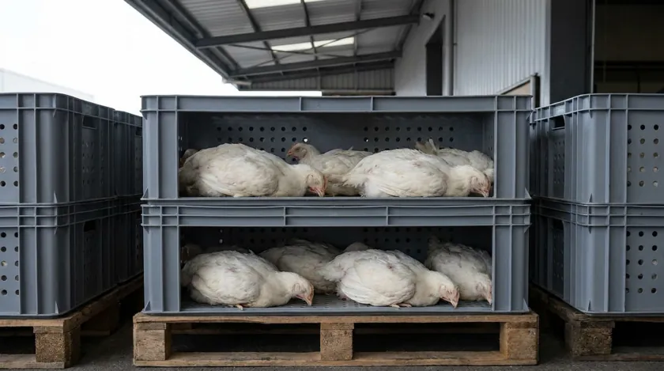
イメージ写真茨城県のある食鳥処理場では、翌日に処理する鶏を荷受け台に置いたまま、一晩を越すことが多かった。県西食肉衛生検査所は、暑い日に風を送ったり、水をかけたりする対策が足りなかったとみている。
同検査所は、大人の鶏を扱う4施設で、処理の前に鶏の1割以上が死亡し、高病原性鳥インフルエンザを疑わなかった報告を調べた。2005年度からの10年間で57件あり、うち31件は6月から8月に起きていた。
イメージ写真 輸送用のかごの中で動かずに横たわる鶏。制作 Before We Eat。 出典
この記述を原資料で確かめる
「茨城県のある食鳥処理場では、翌日に処理する鶏を荷受け台に置いたまま、一晩を越すことが多かった。」
茨城県・平成26年度事業概要、山川ほか「管内大規模食鳥処理場における高死亡率を呈した事例（過去10年間）の分析」95ページ「方法」「結果（1）」、96ページ「考察及びまとめ」A処理場の段落。 原資料を開く
57件は条件を満たした報告の件数。一羽ごとの死亡時刻・場所は特定できない。すべてを到着時死亡、または暑さによる死亡としない。
46暑さで死んだ牛と、飼い続けられなくなった牛日本・2025年7〜10月 ／ 家畜共済の死亡・廃用集計（暫定）
 イメージ写真
イメージ写真2025年の7月から10月、日本の家畜共済で、熱射病か日射病による被害が乳用牛844頭、肉用牛356頭に記録された。合わせて1,200頭。これには、死んだ牛と、生きていても乳用牛や肉用牛として飼い続けられなくなった「廃用」の牛の両方が含まれる。
農林水産省の表で数えたのは、共済に入っていた牛だけだ。1,200頭のうち何頭が死んだのかは、公表された表からは分からない。
イメージ写真 日陰の乏しい場所で口を開け、暑熱の負担を受ける牛。制作 Before We Eat。 出典
この記述を原資料で確かめる
「2025年の7月から10月、日本の家畜共済で、熱射病か日射病による被害が乳用牛844頭、肉用牛356頭に記録された。」
農林水産省「家畜の暑熱被害」PDF 1ページ「地域別の熱射病等による死亡・廃用事故頭数（令和7年度）」全国欄、表注3。 原資料を開く
令和7年度は暫定値。死亡と廃用は合算。暑熱の影響を受けたすべての牛の数でも、国内すべての死亡・廃用の数でもない。
47水牛の子が最初の乳をもらうのは、いつかインド・バドワニ市、2013年報告 ／ 水牛の酪農家60戸への聞き取り
 イメージ写真
イメージ写真水牛の子が生まれたあと、母親の体から胎盤が出るまで、初めての乳を与えずに待つ農場があった。インド中部のバドワニ市で、小規模、中規模、大規模の水牛の酪農場を20戸ずつ調べると、60戸のうち53戸がそう答えた。
出産直後の母親が出す乳を「初乳」という。研究者が目安にした、生後2〜3時間以内に初乳を飲ませる方法をとっていたのは7戸だった。
イメージ写真 湿った地面に横たわる弱った水牛の子。制作 Before We Eat。 出典
この記述を原資料で確かめる
「水牛の子が生まれたあと、母親の体から胎盤が出るまで、初めての乳を与えずに待つ農場があった。」
Kumarほか（2013年）「Buffalo calves health and management practices in urban dairy farms」Abstract、調査方法を述べた冒頭文と初乳の給与時期を述べた末尾。 原資料を開く
公表割合88.33％、11.67％と60戸から、それぞれ53戸、7戸と算出。各子牛の待ち時間や、初乳の時期と死亡との因果関係は報告から確定できない。
48農場の出産時期をそろえるため、子牛を早く産ませたニュージーランド・2015年に自主規制、2018年報告 ／ 農場の慣行と先行研究の検討
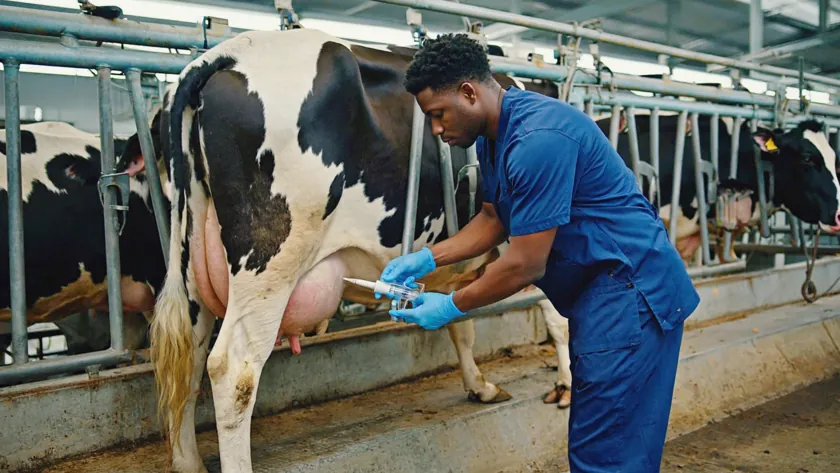
イメージ写真ニュージーランドの一部の酪農場では、群れのほかの牛より出産が遅くなる母牛に、予定より早く産ませる処置をしていた。一年のうち、子牛が生まれる時期をそろえるためだった。
第一次産業省が公表した報告書には、予定日を早めた結果、子牛が死んで生まれたり、生まれても弱っていたりした研究の記録がある。2015年6月、業界は治療以外の目的でこの処置を繰り返す慣行をやめる自主規制を導入した。
イメージ写真 出産前後の乳牛と子牛。制作 Before We Eat。 出典
この記述を原資料で確かめる
「第一次産業省が公表した報告書には、予定日を早めた結果、子牛が死んで生まれたり、生まれても弱っていたりした研究の記録がある。」
ニュージーランド第一次産業省「Bobby Calf Welfare Across the Supply Chain」131ページにまたがる、分娩誘起を扱った段落（Mansellほか、2006年を引用）。 原資料を開く
検討された研究結果を紹介した箇所。ニュージーランドの特定農場での死産として描いていない。自主規制は特別な事情で獣医師が認めた処置まで禁じたものではない。
49帝王切開を繰り返した牛で、体の中の組織がくっついていたベルギー・ゲント大学動物病院、2018年発表 ／ 手術記録の分析
 イメージ写真
イメージ写真ベルジアン・ブルーは筋肉が大きく発達する牛で、子牛の大きさと母牛の産道が釣り合わず、あらかじめ帝王切開を予定することが多い。ベルギーのゲント大学の動物病院は、ここで手術を受けて子牛が生きて生まれた1,053件の記録を調べた。
以前にも帝王切開を受けた母牛562頭のうち、35.4％は、次の手術のときに体内の組織どうしがくっついていた。なかには子宮もくっついていて、手術を進めるのが難しい例があった。
イメージ写真 外科的処置の跡が見える、体の筋肉が大きく発達した牛。制作 Before We Eat。 出典
この記述を原資料で確かめる
「以前にも帝王切開を受けた母牛562頭のうち、35.4％は、次の手術のときに体内の組織どうしがくっついていた。」
Meestersほか、2018年世界牛病学会の講演要旨集176ページ「Results」の反復手術と癒着の段落。 原資料を開く
生存子牛を得た手術のみ解析。既往手術のある562頭の35.4％に癒着、その癒着の8.9％が重度。35.4％が重度だったという意味ではない。
50歩き方に異常があった乳牛を、一頭ずつ数えた米国・2014年調査 ／ 184戸の乳牛の歩行観察
 イメージ写真
イメージ写真乳牛の脚の異常は、牛が歩き出したときに見えてくる。米国で2014年に実施した調査では、調査員が酪農場を訪ね、歩き方を3段階に分けて記録した。歩き方を観察できたのは184戸の2万2,042頭だった。
調査の推計では、軽度から中程度の異常がある牛が6.9％、重度と判定された牛が2.7％だった。合わせると、この調査で足をかばうなど歩き方に異常があると判定された割合は、およそ10頭に1頭にあたる。
イメージ写真 脚をかばう姿勢の乳牛。制作 Before We Eat。 出典
この記述を原資料で確かめる
「歩き方を観察できたのは184戸の2万2,042頭だった。」
Adamsほか（2017年）「Associations between housing and management practices and the prevalence of lameness, hock lesions, and thin cows on US dairy operations」Results第1段落、表1と表2。 原資料を開く
対象全体の191戸・22,622頭と、歩行評価の184戸・22,042頭を区別。割合は標本設計を考慮した推計で、人数を逆算していない。
51泥から牛を移した作業員に、会社は元の放牧地へ戻すよう指示したニュージーランド・2025年公表 ／ 処分記録
 イメージ写真
イメージ写真作業員が2人で牛を泥の深い放牧地から移すと、会社は元の放牧地へ戻すように指示した。ニュージーランドのサウスランドで、通報を受けて調べた第一次産業省が公表した経緯だ。
約125頭は泥に足を取られ、餌を取りに歩いたり、向きを変えたりすることも自由にできなかった。体を横にできる乾いた場所がなく、休むときも牛は泥の中に寝た。会社は、泥の中で牛が1頭死んだことを知ったあとも放牧の仕方を変えず、2025年に4万8,750ニュージーランドドルの罰金を言い渡された。
イメージ写真 乾いて休める場所がなく、深い泥に立つ牛。制作 Before We Eat。 出典
この記述を原資料で確かめる
「作業員が2人で牛を泥の深い放牧地から移すと、会社は元の放牧地へ戻すように指示した。」
ニュージーランド第一次産業省（2025年1月23日）、作業員が牛を移した段落（Two farm workers became so concerned で始まる）。牛の状態は担当者が約125頭に言及する段落と、被毛について述べる段落。 原資料を開く
公表資料に記されているのは会社が出した指示まで。作業員が実際に牛を戻したかは書かれていない。
母豚・子豚・出荷豚
52決められた餌を食べ終えても、母豚の空腹が続く欧州・2022年評価 ／ 科学評価
 イメージ写真
イメージ写真妊娠中の母豚には、太りすぎを防ぐため、栄養を少量に詰めた餌を決まった量だけ与える飼い方がある。必要な栄養はとれても、かさの少ない餌はすぐに食べ終わる。鼻で土を掘って食べ物を探したり、ゆっくりかんだりする時間がほとんどない。
欧州食品安全機関は、こうした条件では妊娠中を通して空腹が続きうると報告した。餌に繊維を増やして食べる時間を延ばすことや、わらや干し草も食べられるようにすることを挙げている。
イメージ写真 給餌の場所にいる母豚。制作 Before We Eat。 出典
この記述を原資料で確かめる
「必要な栄養はとれても、かさの少ない餌はすぐに食べ終わる。」
EFSA（2022年）「Welfare of pigs on farm」4.1.5「Prolonged hunger」の冒頭と、同節の給餌に関する小項目2。 原資料を開く
飼養条件を比べた科学的評価。個体で観察した空腹の持続時間には換算しない。
53飢えで死んだ子豚の胃には、乳がなかったニュージーランド北島・2018年4月と2019年2月 ／ 2農場の子豚の死因調査
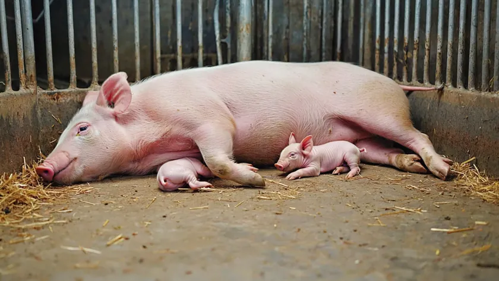
イメージ写真飢えが主な死因と判定された子豚は15頭。どの子豚の胃にも乳がなかった。うち10頭は生まれて24時間以内に死んでいた。別の15頭は体を押しつぶされて死に、この15頭はすべて生後24時間以内だった。
研究者が2か所の養豚場から集めて体を調べたのは、生後1週間までの死亡例と死産を合わせた106頭。うち、生きて生まれたあとに死んだのは65頭だった。
イメージ写真 出産後の母豚と足元の子豚。制作 Before We Eat。 出典
この記述を原資料で確かめる
「どの子豚の胃にも乳がなかった。」
論文「Animal Welfare Compromises Associated with Causes of Death in Neonatal Piglets」結果、表2と、3.2.2「Crushing」、3.2.4「Starvation」の胃の所見を記した段落。 原資料を開く
飢餓死の判定に胃内に乳がないことを用いた。胃の中の所見だけで、その子豚が一度も乳を飲まなかったとはいえない。対象は死亡個体で、生まれた全頭に対する割合ではない。
54肩の床ずれが5センチを超え、運べなかった母豚デンマーク・2015年1月〜2016年2月 ／ 12農場での出荷前診察
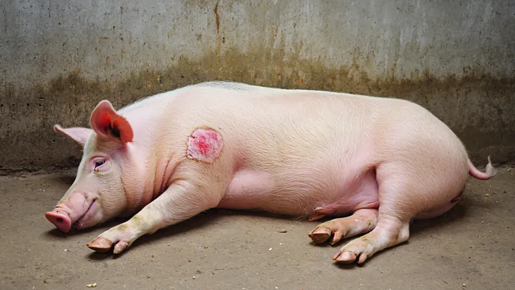
イメージ写真食肉処理場へ出荷する日、肩の床ずれの直径が5センチを超えていたため、運べなかった母豚が1頭いた。デンマークの12の養豚場で、繁殖を終えて出荷される母豚を調べた研究の記録だ。
実際に輸送された522頭にも、肩の床ずれは見つかった。58頭の肩に、合わせて71か所。傷の大きさは直径1センチから5センチに及んだ。
イメージ写真 母豚の肩にできた床ずれ。制作 Before We Eat。 出典
この記述を原資料で確かめる
「食肉処理場へ出荷する日、肩の床ずれの直径が5センチを超えていたため、運べなかった母豚が1頭いた。」
Fogsgaardほか（2018年）表3および表注c、d。表注dに、肩の床ずれが直径5cmを超え、輸送されなかった1頭の記載がある。 原資料を開く
この1頭は輸送された522頭の集計に含まない。58頭は肩の褥瘡のある母豚、71はその褥瘡を数えた箇所数。
55豚の尾に残った傷を、三方向から見たイタリア・オランダ・スペイン、2026年報告 ／ 処理後の豚の尾の画像調査写真は記事内で選べます処理後のぶたの尾が写っています
イタリア、オランダ、スペインの食肉処理場で、研究者は豚の尾を後ろと左右から撮った画像を見比べた。各国1施設で5,000頭ずつ、合わせて1万5,000頭。ほかの豚に尾をかじられてできたと判定した傷や傷跡が、803頭に残っていた。
491頭では傷や傷跡が重いと判定された。尾の先に傷があるかどうかと、飼育中に人が尾を切る処置をしたかどうかは、別々に記録した。
研究の記録写真を見る（処理後のぶたの尾が写っています）
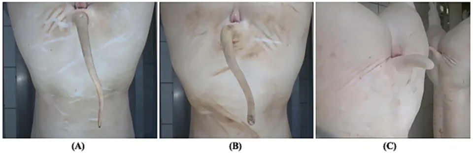
研究写真 食肉処理後のぶたの尾を、長さと形の異なる三つの例で比較した写真。出典 Romano ほか（2026年）図2 ／ CC BY 4.0。表示用に縮小・形式変換。 出典
この記述を原資料で確かめる
「ほかの豚に尾をかじられてできたと判定した傷や傷跡が、803頭に残っていた。」
Romanoほか（2026年）2.1〜2.3の対象・撮影法・判定法、3.2「Tail-biting lesions in slaughtered pigs」第1段落と表2、重症度の定義は表1。 原資料を開く
尾の傷は処理場で撮られた画像による判定で、かじられた瞬間の目撃ではない。掲載写真の原図2は尾の形状の分類例で、先端の褐色は処理時の焦げ。
56処理場に着いた豚。すでに死んでいた豚と、自力で歩けない豚米国・2012～2015年 ／ 処理場調査
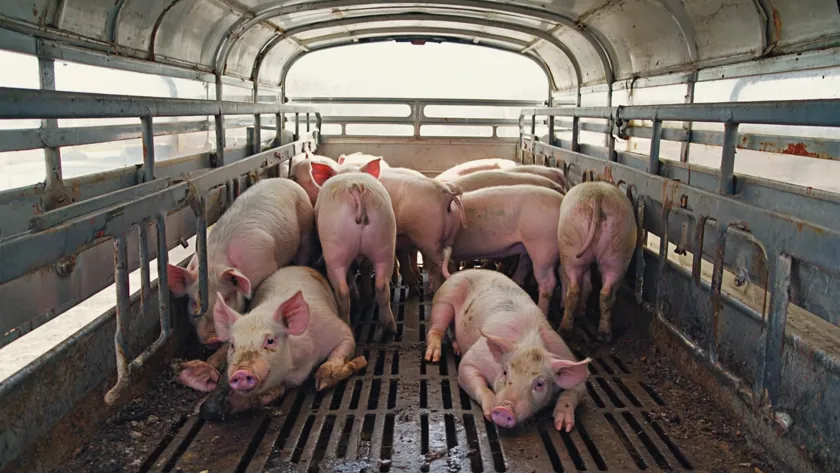
イメージ写真処理場に着いたとき、トラックの中ですでに死んでいた豚がいた。けがで歩けず、到着時に安楽死の処置を受けた豚も、荷台を降りたあとに死んだ豚もいた。米国の20の処理場は、この三つを分けて数えた。
2012年から2015年にかけて約3億1千万頭を扱った施設の記録を合わせると、この三つに当たる豚の割合は0.26％だった。別に、降ろされてから気絶処置を受けるまでに、自力で動けないか、群れについていけなかった豚が0.63％いた。
イメージ写真 過密な車内で口を開け、一頭が倒れたぶた。制作 Before We Eat。 出典
この記述を原資料で確かめる
「けがで歩けず、到着時に安楽死の処置を受けた豚も、荷台を降りたあとに死んだ豚もいた。」
Ritterほか「Materials and Methods」の「Study Design and Data Collection」、表1のEOA・DIP、抄録の4年間の加重平均。 原資料を開く
死亡には到着後の安楽死も含む。歩行不能の分類には、立てても群れの速さで動けない豚が含まれる。個体ごとの死因は集計していない。
家きん、ウサギ、ヤギ、羊
57先に殻を破ったひなほど、最初の水を長く待つ欧州・2023年評価 ／ 科学評価
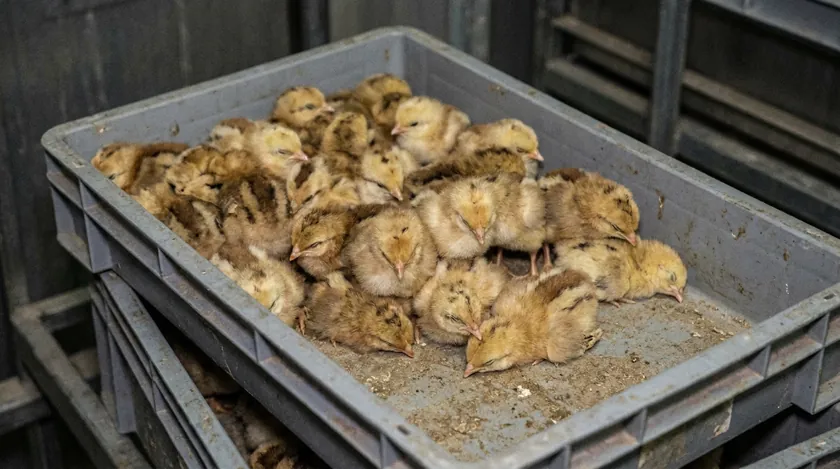
イメージ写真同じふ化場の卵でも、最初のひなが殻を破ってから、最後のひなが出てくるまでに、ふつう1日から2日の開きがある。従来の方式では、ひなをまとめて取り出し、殻と分け、数えて箱に入れる。初めて餌を食べ、水を飲めるのは、トラックが農場に着き、鶏舎に放されたあとだ。
早く生まれたひなには、ほかの卵がかえるのを待った時間も加わる。欧州食品安全機関は、ふ化場での待機や作業、輸送を合わせ、飲まず食わずの時間が生まれてから72時間に及ぶ場合もあると記す。ふ化した場所ですぐに水と餌を与える設備もある。
イメージ写真 輸送用の箱の中に身を寄せるひな。制作 Before We Eat。 出典
この記述を原資料で確かめる
「欧州食品安全機関は、ふ化場での待機や作業、輸送を合わせ、飲まず食わずの時間が生まれてから72時間に及ぶ場合もあると記す。」
EFSA（2023）3.3.1節。冒頭のふ化の時間差、および「With the traditional method of hatching」で始まる段落とその直後。 原資料を開く
1〜2日は通常のふ化時刻の幅。72時間は無給水・無給餌の長い場合の記述で、平均ではない。農場までの距離や設備によって待ち時間は変わる。
58くちばしを短くした群れでも、羽はつつかれたフランス・2015年4月〜2016年6月 ／ 採卵鶏159群の農場調査
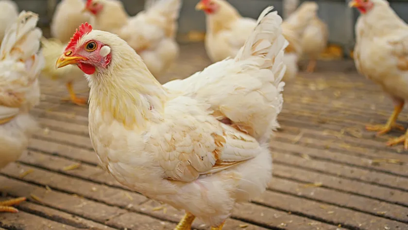
イメージ写真仲間の羽を強くつつき、羽を傷める。これを防ぐため、フランスで調べた採卵鶏は、どの群れもくちばしの先を短くしてあった。研究者は実際に農場へ行き、羽の残り方と皮膚の傷を調べた。
強い羽つつきがあったと推定された群れの割合は、設備を備えたケージで飼う79群では32.9％、放し飼いの80群では23.8％だった。ケージの鶏を調べたのは生後70週、放し飼いの鶏は61週だった。
イメージ写真 羽毛が抜けた採卵鶏。制作 Before We Eat。 出典
この記述を原資料で確かめる
「強い羽つつきがあったと推定された群れの割合は、設備を備えたケージで飼う79群では32.9％、放し飼いの80群では23.8％だった。」
Cotonほか（2019）著者抄録の第3項（羽・皮膚の観察、対象）と第4項（方式別の週齢・群れの割合）。 原資料を開く
著者抄録を確認。数値は個々の鶏の負傷率ではない。調査した週齢も異なるため、二つの数字だけで飼い方の優劣や原因は決められない。
59鶏が重なり、下の鶏が息をできなくなるオーストラリア・2019〜2022年 ／ 放し飼いの採卵鶏86群の追跡調査
 イメージ写真
イメージ写真鶏が一か所に集まり、仲間の体に重なると、押し込まれた鶏が息をできずに死ぬことがある。オーストラリアの放し飼いの養鶏場で、この死に方がどれほど起きているのかを調べた。
研究者が2019年から2022年にかけて追ったのは、3事業者の86群、合わせて約243万羽。そのうち4万4,239羽の死因が、鶏の密集による窒息と記録された。1羽もこの死に方をしなかった群れもあれば、導入した100羽あたり3.5羽が死んだ群れもあった。
イメージ写真 一か所に集まり、体の重なった鶏。制作 Before We Eat。 出典
この記述を原資料で確かめる
「そのうち4万4,239羽の死因が、鶏の密集による窒息と記録された。」
Australian Eggs・メルボルン大学、最終報告書（2024）。Executive Summary第2段落（対象と期間）、Overall Conclusions第1・2段落（2,427,673羽、44,239羽、群れごとの幅）。 原資料を開く
4万4,239羽は1回の事故の犠牲ではなく、調査期間の合計。各事故で最初に鶏が集まったきっかけは一律に特定されていない。
60交尾のとき、雄は雌の頭から首の皮をくわえた肉用鶏の親鳥を飼う1農場、2022年報告 ／ 行動の観察と傷の調査
 イメージ写真
イメージ写真雄鶏が、身をかがめていない雌の頭から首の皮をくちばしでつかみ、背に乗った。雌が逃れようとすると皮膚が傷つき、すでにあった傷が広がることもあった。ひなをとるために肉用鶏の親鳥を飼う、ある農場で研究者が見た行動だ。
同じ鶏舎で死んだ雌のうち、襲われた痕のある15羽の体を調べた。7羽は頭や首に、5羽は背中と太ももの脇に、残る3羽にはその両方に傷があった。
イメージ写真 背の羽毛が抜け、皮膚が露出した雌鶏。制作 Before We Eat。 出典
この記述を原資料で確かめる
「雄鶏が、身をかがめていない雌の頭から首の皮をくちばしでつかみ、背に乗った。」
Lupu・Militaru（2022）pp.40–41「Observing the behavior of birds」、p.37の表1（傷の部位別の羽数）。 原資料を開く
37週間観察した1農場の報告。15羽は外傷のある死体を選んだ数で、全死亡羽数や群れ全体の負傷率を表さない。
61気絶させる水槽に着く前に、鶏の骨は折れていた英国・1989年報告 ／ 工程別調査
 イメージ写真
イメージ写真卵を産む時期を終えた鶏を、農場のケージから出し、処理場へ運ぶ。処理場では脚を金具に掛け、水に電気を通して気絶させる装置へ送る。英国で1989年に発表された調査では、その装置に届いた時点で、生きていた鶏を調べると29％に骨折があった。
研究者は農場で捕まえる段階から二つの処理場の作業の終わりまで、場所を変えながら生きた鶏と死んだあとの体を合わせて3,115羽分調べた。骨が折れる工程として挙がったのは、ケージから鶏を取り出すときと、処理場のラインにつるすときだった。
イメージ写真 鶏の体を支え、骨や関節を調べる場面。制作 Before We Eat。 出典
この記述を原資料で確かめる
「英国で1989年に発表された調査では、その装置に届いた時点で、生きていた鶏を調べると29％に骨折があった。」
Gregory・Wilkins（1989）著者抄録の第1項（3,115羽分、2処理場）と第2項（気絶装置到着時の29％、取り出し・懸鳥）。 原資料を開く
著者抄録を確認。3,115羽は工程全体のサンプル数であり、29％を掛けて負傷羽数を算出することはできない。処理後に見つかった骨折はこの割合に含めない。
62一羽用の金網の囲いで過ごす、繁殖用の雄アヒル欧州・2023年評価 ／ 科学評価
 イメージ写真
イメージ写真バリケンというアヒルの雄は、別の種類のアヒルとの間にひなをつくるために飼われている。欧州食品安全機関が紹介した繁殖方法では、精液を採るために、雄を1羽ずつ金網のケージに入れて約6か月飼う。
報告書にある雄用のケージは、奥行き60センチ、幅50センチ。隣の鳥の姿は見えても、互いに触れられる範囲は限られる。
イメージ写真 翼を広げられず、水浴びもできない単飼のアヒル。制作 Before We Eat。 出典
この記述を原資料で確かめる
「欧州食品安全機関が紹介した繁殖方法では、精液を採るために、雄を1羽ずつ金網のケージに入れて約6か月飼う。」
EFSA（2023）3.4.2.1.2節「Individual cages」。囲いの寸法と隣接鳥との接触を記した段落、採精のため6か月飼う雄を記した最終段落。 原資料を開く
対象は交雑種をつくるバリケンの繁殖雄などに使われる一方式。別の床飼いの方式については直前の節に記載がある。
63繁殖期の七面鳥は、何度も人に体を押さえられる1983年の研究・欧州食品安全機関の2026年評価 ／ 繁殖方法の評価と出血の観察
 イメージ写真
イメージ写真繁殖用の七面鳥では、雄から精液を採り、雌に人工授精する。欧州食品安全機関が挙げた方法では、雌は最初の1週間に3回、その後も週に1回ずつ、人に捕まえられる。台にあおむけにして押さえる方法もある。
雄の体にどんな跡が残るかを調べた研究もある。精液を採る前とあとで体を調べると、採ったあとには、調べた雄すべてで、精液やふんの出口にあたる「総排出腔」の組織に出血が見つかった。出血の広がりには、採取の頻度や扱い方で差があった。
イメージ写真 繁殖のために人に体を支えられた七面鳥。制作 Before We Eat。 出典
この記述を原資料で確かめる
「精液を採る前とあとで体を調べると、採ったあとには、調べた雄すべてで、精液やふんの出口にあたる「総排出腔」の組織に出血が見つかった。」
Bakst・Cecil（1983）p.683抄録冒頭の観察結果。雌を扱う頻度と姿勢はEFSA（2026）3.2.12.2節「Insemination of turkey hens」。 原資料を開く
出血は1983年の研究で調べた雄の所見。EFSAの2026年の評価には現在の商業農場で出血が起きる頻度を示す新しい研究が乏しいとある。
64金網の上で暮らす親ウサギの足の裏に、傷ができたスペイン・ポルトガル、2001～2012年 ／ 農場調査
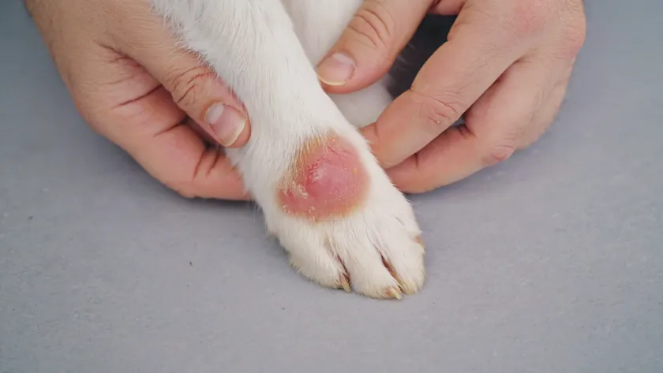
イメージ写真繁殖用のウサギを飼う金網の床には、ふんが下に落ちる利点がある。その床に毎日、足の裏をつけて暮らすウサギには、皮膚がただれて傷ができることがある。足の裏に傷を負うと、立つことも歩くことも難しくなる。
スペインとポルトガルで2001年から12年間、研究者は農場を訪ね、母ウサギ延べ10万5,009匹の足を調べた。母ウサギに足裏の傷が見つかった割合は、足を休める板がある場合は平均4.9％、板がない場合は13.7％だった。
イメージ写真 ウサギの足裏に生じた、毛の抜けた赤い病変。制作 Before We Eat。 出典
この記述を原資料で確かめる
「母ウサギに足裏の傷が見つかった割合は、足を休める板がある場合は平均4.9％、板がない場合は13.7％だった。」
Rosell・de la Fuente（2013）p.323「Evolution of Morbidity」表3と直後の段落。p.319に歩行・起立への影響、p.320に足裏の病変の判定方法。 原資料を開く
664は訪問先全体の農場数。授乳中の母ウサギを実際に診たのは413農場、延べ1,603回のサンプル。割合は統計モデルによる平均で、板だけを変えた実験ではない。
65餌を減らした囲いで、子ウサギは仲間を押しのけた2015年の研究・欧州食品安全機関の2020年評価 ／ 給餌量を変えた比較研究
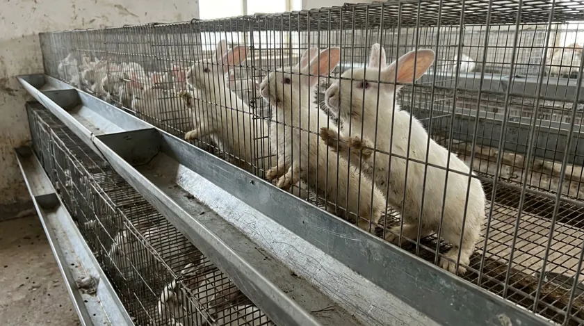
イメージ写真離乳したウサギがおなかをこわすのを防ぐため、フランスなどの農場では、しばらく餌の量を減らすことがある。そのとき、同じ囲いのウサギは、餌や水をめぐってどんな動きをするのか。
2015年に発表された研究では、8匹ずつ入れた囲いで、自由に食べられる場合と、その75％の量を与える場合を比べた。餌を減らした囲いでは、餌や水を取り合い、仲間をかんだり、押しのけたり、上に飛び乗ったりする行動が増えた。成長のばらつきは、食べたいだけ餌を取れた囲いと同じくらいだった。
イメージ写真 空の餌入れのそばに集まるウサギ。制作 Before We Eat。 出典
この記述を原資料で確かめる
「餌を減らした囲いでは、餌や水を取り合い、仲間をかんだり、押しのけたり、上に飛び乗ったりする行動が増えた。」
Dalmauほか（2015）p.1172抄録の給餌条件と、行動・体重を比較した結果の段落。離乳後の消化器疾患を減らす目的はEFSA（2020）3.6.1節。 原資料を開く
実験全体は256匹を32の囲いに配分し、生後32〜60日の行動の観察はこのうち20の囲いで実施。フランスは慣行の説明であり、この実験の実施地とはしていない。
66角が伸びる前の子ヤギに、熱したこてを当てる米国中西部・2019年調査 ／ ヤギの酪農家30戸への調査
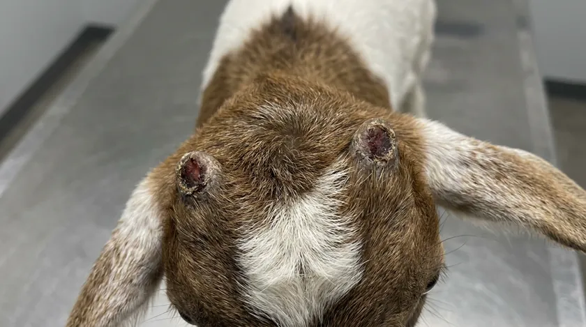
イメージ写真ヤギの角が伸びてくる場所には、小さなふくらみがある。米国中西部の酪農家30戸に尋ねると、29戸が、角の成長を止めるためにこの部分に熱したこてを当てると答えた。30戸のうち23戸は、生後14日までに処置をしていた。
このとき痛みを抑える薬を使うか、という問いに答えた21戸のうち、使うと答えたのは6戸だった。
イメージ写真 子ヤギの頭に残る除角芽処置の跡。制作 Before We Eat。 出典
この記述を原資料で確かめる
「このとき痛みを抑える薬を使うか、という問いに答えた21戸のうち、使うと答えたのは6戸だった。」
Hempsteadほか（2021）表7「Disbudding practices」、考察中の「The overwhelming majority of producers」で始まる段落の6/21。 原資料を開く
焼きごての使用は29/30。処置時期の7日以内10戸、8〜14日13戸を合算。鎮痛に関する割合の分母は30戸ではなく21戸。
67子羊の尾を短くするとき、痛みを抑えたのはどれほどの農家かオーストラリア・2024年報告 ／ 羊産業の鎮痛に関する集計
 イメージ写真
イメージ写真子羊の尾を短くする方法には、熱した刃で切るものと、輪をかけるものがある。オーストラリアの羊産業がまとめた2024年の報告で、処置に伴う痛みをどう抑えていたかが集計された。
メリノ種の子羊では、報告書が「適切な痛みの管理」をしたと数えた生産者の割合は、熱した刃で尾を切る場合で78.8％、輪を使う場合で24.2％だった。同じ報告で、メリノ種の雄の子羊を去勢するときに鎮痛をした生産者は22.3％だった。
イメージ写真 身体を保定された、尾の短い子羊。制作 Before We Eat。 出典
この記述を原資料で確かめる
「メリノ種の子羊では、報告書が「適切な痛みの管理」をしたと数えた生産者の割合は、熱した刃で尾を切る場合で78.8％、輪を使う場合で24.2％だった。」
Sheep Sustainability Framework「Indicator Summary 2024」p.3の指標1.1.2c（断尾・Merino・2024欄）、p.2の指標1.1.2b（去勢・同じ列）。 原資料を開く
分母は処置にあたる生産者。鎮痛を受けた羊の頭数や痛みの強さはこの表から分からない。報告書の分類は「appropriate pain management」。
輸送、と畜、畜産副産物
68日本への空輸で、馬1頭が死に、8頭が重傷を負ったカナダから日本、2023年7月〜2024年6月 ／ 空輸時の死亡・重傷の行政集計
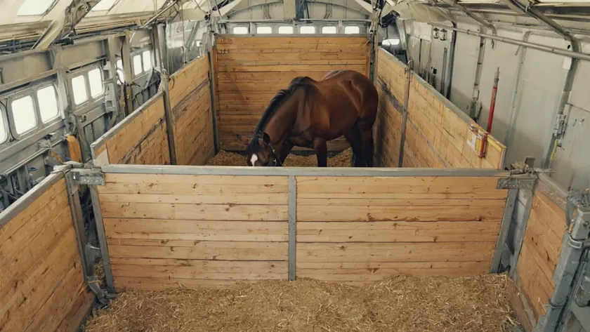
イメージ写真2023年7月から翌年6月までに、カナダから日本に3,171頭の馬が空輸された。日本で育て、のちに食肉にする馬だ。日本の空港で馬を降ろし終えるまでに、1頭の死亡と8頭の重傷が報告された。
飛行機を降りた馬は、トラックで検疫施設へ向かう。そこから先の道中や検疫中に起きたけがや死は、航空会社がカナダ側に報告する義務の範囲を外れる。
イメージ写真 狭い輸送用の囲いで動きを制限される馬。制作 Before We Eat。 出典
この記述を原資料で確かめる
「日本の空港で馬を降ろし終えるまでに、1頭の死亡と8頭の重傷が報告された。」
カナダ食品検査庁「Transport outcomes」表の July 2023 to June 2024 行と表注。輸出目的は「More information」末段。 原資料を開く
公表値は報告された件数。個々の馬の死因、負傷部位、負傷した瞬間は表から確認できない。
69脚を縛られたラクダに、けがが多く見つかったカタール・ドーハ、2019年9月調査 ／ 家畜市場での観察写真は記事内で選べますラクダを持ち上げる場面
2019年9月、カタールの首都ドーハの市場には、脚を縛って歩幅を制限されたヒトコブラクダがいた。研究者が調べたのは76の囲いで暮らす528頭。そのうち132頭は一頭ずつ、体に傷があるかを確かめた。
けがが見つかった割合は、脚を縛られたラクダでは37.0％、縛られていないラクダでは18.1％だった。一頭一頭の傷がいつ、どうやってできたのかは、この調査ではわからない。
市場の関連写真を見る（ラクダを持ち上げる場面）

関連写真 カタールのアブ・ハムール卸売市場で持ち上げられるラクダ。出典 Alex Sergeev（Wikimedia Commons） ／ CC BY-SA 3.0。表示用に縮小・形式変換。 出典
この記述を原資料で確かめる
「けがが見つかった割合は、脚を縛られたラクダでは37.0％、縛られていないラクダでは18.1％だった。」
Menchettiほか（2021）本文8ページ、図2の後の段落「Camels with injuries…」。調査対象は2〜3ページの「Measures, data collection, and handling」の、各囲いから個体を選んだ方法を記した段落（n＝132）。 原資料を開く
囲い全体の528頭と個体別検査の132頭を区別。けがは体の各部を調べた結果で、縄の当たる部位だけを数えた値ではない。
70港を出ようとした船が横倒しになった。中には子羊が1万4,600頭いたルーマニア・2019年 ／ 事故調査資料
 イメージ写真
イメージ写真2019年11月24日、1万4,600頭の子羊を積んだクイーン・ハインド号が、ルーマニアのミディア港で岸を離れた。出港して間もなく船は傾き、まだ港の中にいるうちに横倒しになった。ほとんどの羊が溺れ死んだ。
生きて船から救い出されたのは252頭だった。獣医師が見守るなかで容体が安定し、動物保護団体に引き取られたのは、そのうち180頭だった。
イメージ写真 港で大きく傾いた家畜運搬船。制作 Before We Eat。 出典
この記述を原資料で確かめる
「生きて船から救い出されたのは252頭だった。」
ルーマニア当局の事故報告資料「Maritime incident – 24.11.2019」および「After the incident…」の段落。死亡の状況は欧州議会調査 Case study 6、7。 原資料を開く
積載数と救出頭数はルーマニア当局の公表値。船から救出された頭数と保護団体に移った頭数を区別した。
71気絶させる処置を受けたあとも、まばたきをした牛がいたスウェーデンの食肉処理場、2013年報告 ／ 気絶処置後の牛の反応の観察
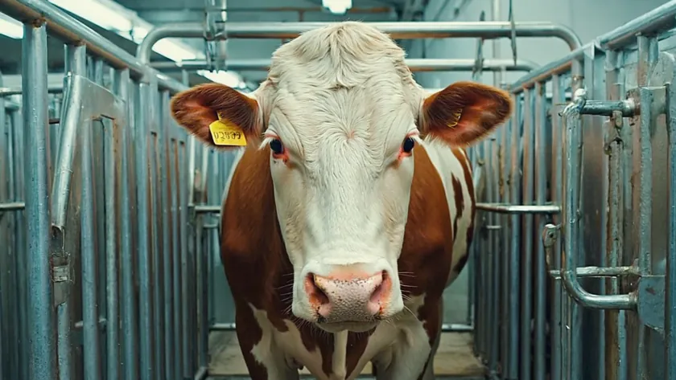
イメージ写真殺す前に牛を気絶させる処置をした。ところが、自分でまばたきをする牛がいた。その場に倒れなかった牛もいた。スウェーデンの食肉処理場で、研究者が998頭を観察したときの記録だ。
研究者が体の反応を見て、最初の処置で十分に気絶していないと判定したのは125頭だった。中でも雄牛では、年の若いものと成長したものを合わせた585頭のうち、98頭で気絶が不十分だった。
イメージ写真 処理場で気絶処置を受ける牛。制作 Before We Eat。 出典
この記述を原資料で確かめる
「研究者が体の反応を見て、最初の処置で十分に気絶していないと判定したのは125頭だった。」
Atkinsonほか（2013）476ページの表2と「Stun quality」第1、2段落。雄牛98頭とそれ以外の牛27頭の計125頭。まばたきと倒れない反応は同節および表3。 原資料を開く
観察員による判定と個体の意識・感覚は区別した。まばたきや倒れなかった反応が125頭すべてに見られたという意味ではない。
72羽を取りやすくするための湯に、生きた鶏が入った英国・2016年に発生、2020年最高裁判決 ／ 裁判資料
 イメージ写真
イメージ写真2016年8月31日、英国の食鳥処理場で、鶏が生きたまま湯の槽に入った。湯につけるのは、死んだ鶏の羽を取りやすくするためだ。処理場では鶏を脚でつるし、気絶させてから首を切り、血を抜く順にラインが進む。この鶏は首が十分に切れていなかった。
同じ処理場で9月12日、さらに10月5日にも、それぞれ1羽が生きたまま湯の槽に入った。
イメージ写真 処理ラインで脚をつられ、湯槽の手前にいる鶏。制作 Before We Eat。 出典
この記述を原資料で確かめる
「同じ処理場で9月12日、さらに10月5日にも、それぞれ1羽が生きたまま湯の槽に入った。」
英国最高裁 [2020] UKSC 39 判決要旨1ページ「Background to the appeal」第1、2段落。 原資料を開く
3日で計3羽。生存は確認されたが、鶏の意識や感覚を個体別に示す記載はない。2020年の最高裁判断は事業者の刑事責任についての法解釈。
73子ができないと判断された豚の中に、妊娠した豚がいた欧州の複数国・2017年評価 ／ 処理場調査の科学評価
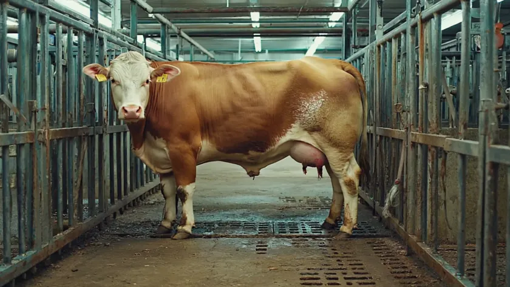
イメージ写真スコットランドの31の農場で、子ができないという理由で雌豚が食肉処理に回された。処理後に142頭分の生殖器を調べると、19頭は妊娠していた。そのうち4頭では、おなかの子がすでに14週以上育っていた。
妊娠中に処理場に送られた例は牛にもある。欧州食品安全機関がまとめた調査の一つでは、ベルギーの一つの処理場で調べた雌牛965頭のうち、10.1％が妊娠していた。
イメージ写真 処理場に運ばれる家畜。制作 Before We Eat。 出典
この記述を原資料で確かめる
「処理後に142頭分の生殖器を調べると、19頭は妊娠していた。」
Wardほか（2010）第21回国際豚病学会要旨集、冊子1094ページ（PDF1106枚目）、発表P.788「Results」第1段落および表1。ベルギーの牛はEFSA（2017）第3.1.2節の表1。 原資料を開く
豚は2006〜2008年、不妊などを理由に処理された個体から調べた142頭。19頭は14農場からで、妊娠14週以降は4頭。欧州全体の頻度ではない。
74羊の顔を、毛刈りの作業員が繰り返し殴ったオーストラリア・2017年報道 ／ 法廷報道
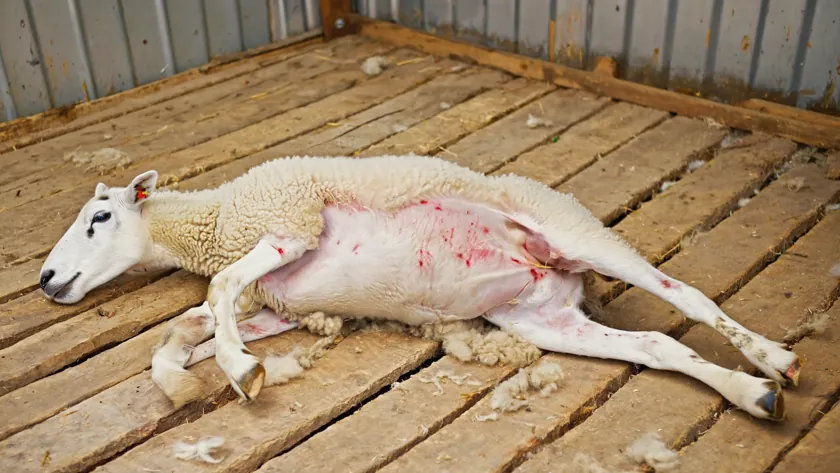
イメージ写真毛刈りの作業員が羊の顔を何度も拳で殴り、バリカンでたたいた。オーストラリアのビクトリア州で撮られた映像が、2017年、ホーシャムの法廷で流れた。目や鼻、口から血を流し、よろめきながら立ち去る羊が何頭も映っていたと、法廷を取材したABCは伝えている。
撮影したのは、毛刈り小屋で働きながらカメラを身につけていた人たちだった。映像の公開後、州当局が調査を始めた。作業員4人は合わせて60件の動物虐待の罪を認めた。
イメージ写真 毛刈りのために仰向けで保定された羊と皮膚の擦り傷。制作 Before We Eat。 出典
この記述を原資料で確かめる
「目や鼻、口から血を流し、よろめきながら立ち去る羊が何頭も映っていたと、法廷を取材したABCは伝えている。」
ABC Rural（2017年3月1日）冒頭の「A packed court room…」「Many of the animals…」の2段落。4人と60件は同記事の第2段落。 原資料を開く
確認したのは記者による法廷取材記事。映像自体・判決原本は未確認。60件は罪の数で、羊の頭数ではない。
75抜ける時期が来る前に、ガチョウの羽が引き抜かれる欧州・2010年評価 ／ 科学評価
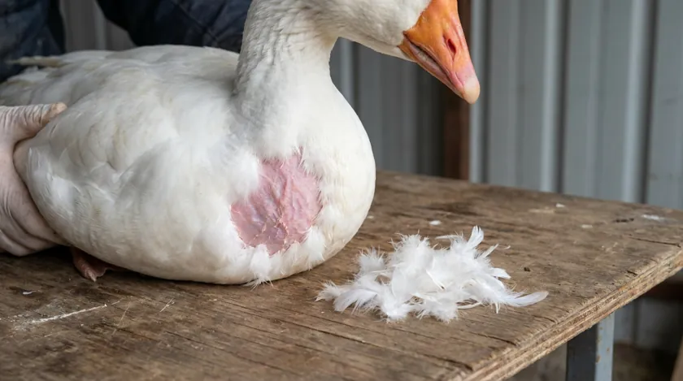
イメージ写真生きたガチョウから羽毛を採るとき、羽の抜けやすさは、一羽の体の中でも場所によって違う。同じ群れで飼っていても、すべての鳥の羽が同じ時に生え替わるわけではない。
まだ抜ける時期にない羽を引き抜くと、痛みが生じ、羽の根元から血が出る。皮膚が裂けることもある。2010年、欧州食品安全機関は、当時の商業生産の条件では、自然に抜ける羽だけを集めようとしても、こうした引き抜きを避けきれないと結論づけた。
イメージ写真 胸の羽毛が抜け、保定されたガチョウ。制作 Before We Eat。 出典
この記述を原資料で確かめる
「まだ抜ける時期にない羽を引き抜くと、痛みが生じ、羽の根元から血が出る。」
EFSA（2010年11月25日）本文の「In the opinion…」の段落と、末尾「Notes to editors」の羽を採る二つの方法を説明した箇所。 原資料を開く
科学評価が述べた痛みと損傷。特定農場の負傷羽数や、現在の欧州全体における発生率を調べたものではない。

火災・自然災害・防疫・供給網の途絶
76豚舎が燃え、約4,000頭が焼け死んだ日本・鳥取県、2025年11月 ／ 事故・自治体記録
 イメージ写真
イメージ写真2025年11月7日の夕方、鳥取県南部町の西伯農場から消防に通報が入った。火が消えたのは翌朝だった。豚舎など8棟が全焼し、ほかに2棟の一部が焼けた。
約4,000頭の豚が焼け死に、生き残った子豚およそ200頭は別の農場に移された。この火災では人も2人亡くなり、1人がけがをした。
イメージ写真 煙が広がる豚舎で柵に閉じ込められたぶた。制作 Before We Eat。 出典
この記述を原資料で確かめる
「約4,000頭の豚が焼け死に、生き残った子豚およそ200頭は別の農場に移された。」
鳥取県議会・2025年11月21日会議録、ファロスファーム西伯農場火災の報告中「そうしましたら、事案の概要です。」で始まる説明。 原資料を開く
県の初報では頭数は概数。200頭は生き残った子豚として別に報告されている。原因・過失は扱っていない。
77一度引いた水がまた上がり、養鶏場の鶏がすべて溺れた日本・鹿児島県奄美市、2010年10月 ／ 大学による被災農場の聞き取り
 イメージ写真
イメージ写真水は、養鶏場に設けた高さ約1.5メートルの防災用の棚を越えた。2010年10月の大雨が鹿児島県奄美市の前勝地区を襲ったとき、最初に上がった水は1メートルほどで、いったん引いた。数時間後、豪雨に満ち潮が重なり、水かさは2〜3メートルに達した。
養鶏場には卵を採る赤鶏が約500羽、ほかに烏骨鶏などもいた。ここの鶏はすべて溺れ死んだ。
イメージ写真 浸水した豚舎で逃げ場が限られたぶた。制作 Before We Eat。 出典
この記述を原資料で確かめる
「数時間後、豪雨に満ち潮が重なり、水かさは2〜3メートルに達した。」
鹿児島大学「奄美豪雨災害の動物への影響」157ページ「3．調査結果 1）奄美市の養鶏場」。現地で経営者から聞き取った記録。 原資料を開く
約500羽は主に飼っていた赤鶏の数で、鶏舎全体の死亡羽数ではない。鶏が実際に棚に乗ったかは記録にない。
78鳥インフルエンザの発生で、約1,771万羽が殺処分の対象に日本・2022～23年シーズン ／ 防疫・行政集計
 イメージ写真
イメージ写真高病原性の鳥インフルエンザが農場で見つかると、ほかの農場に感染を広げないため、同じ農場の鳥をすべて殺す措置がとられる。2022年から翌年にかけてのシーズン、日本では約1,771万羽が殺処分の対象になった。
26道県で起きた84件のうち、61件は卵を産む鶏を飼う農場で起きた。約1,771万羽という数には、感染が一羽ずつ確認されていない鳥も含まれる。
イメージ写真 防疫が問題となる鶏舎で、動かず横たわる鶏。制作 Before We Eat。 出典
この記述を原資料で確かめる
「2022年から翌年にかけてのシーズン、日本では約1,771万羽が殺処分の対象になった。」
農林水産省「農場の分割管理に当たっての対応マニュアル」第1版、本文1ページ「1．はじめに」（1）と（2）。同じ農場の鳥が対象になる考え方は本文4ページ。 原資料を開く
84は発生事例数、61はそのうち採卵鶏で発生した事例数。約1,771万羽は殺処分の対象羽数で、感染確認羽数や病死羽数としては扱わない。
79出荷先が閉まり、食肉にするはずの豚が殺処分された米国ミネソタ州・2020年 ／ 供給網の途絶・行政資料
 イメージ写真
イメージ写真出荷できる大きさになった豚が農場に残った。2020年春、米国で新型コロナが食肉処理場の従業員に広がり、工場が相次いで閉まったためだ。ミネソタ州の農家には、次の群れの子豚を育てる場所も必要だった。豚の育ちを遅らせようと餌を変えた人も、食用にしてもらうために豚を無償で譲った人もいた。
州農務局の推計では、出荷が滞ったこの時期、州内で40万頭を超える豚が殺処分された。州は死んだ動物を堆肥にする場所を2か所設けた。
イメージ写真 探索する材料がなく、汚れた床に密集するぶた。制作 Before We Eat。 出典
この記述を原資料で確かめる
「州農務局の推計では、出荷が滞ったこの時期、州内で40万頭を超える豚が殺処分された。」
ミネソタ州農務局の州議会提出報告、本文「Widespread plant closures…」「Production systems implemented…」の2段落。2か所の場所は「Agricultural Response to COVID-19」の第1段落。 原資料を開く
40万頭超は州全体の推計。州の処理場所に搬入された数や、一農場で殺処分された数とは異なる。
記録を掘り下げて読む
- イメージ写真
日本・島根県／2023年／行政資料・判決報道
従業員が2頭の牛の鼻や首を蹴った - 現場写真
英国・デヴォン／2024年の現場調査／英国政府・州の発表
子牛が横たわっていたのは、糞尿とごみの中だった  イメージ写真
イメージ写真英国・ケンブリッジシャー／2024年／自治体の発表
けがをした家畜に、体を休める敷き材が足りなかった- イメージ写真
日本・茨城県／2005〜2014年度／食肉衛生検査所の調査
荷受け台で一晩を過ごした鶏 - 写真は記事内で選べます足うらの傷が写っています
ポーランド／2024年発表／飼育研究・記録写真
鶏の足裏の傷は、指の腹にまで及んでいた - イメージ写真
デンマーク／2021年発表／商業鶏群の研究
一羽の鶏の胸に、四つ以上の骨折が見つかった - 関連写真
日本／神奈川県の飼育試験・農林水産省の令和6年度調査
鶏は巣箱で卵を産み、止まり木に上って休んだ - イメージ写真
日本／2022年ほか／国会会議録・農林水産省資料
卵を産まない雄のひなは、生まれてすぐに殺される
この続きが気になったら
牛・ぶた・にわとりのくらしへ
ここで読んだ記録だけではわからない、育つ場所から食卓までの道のりをたどれます。
動物が休める場所をつくる工夫へ
神奈川県の鶏の研究から、設備を変えて行動を確かめる手順が読めます。